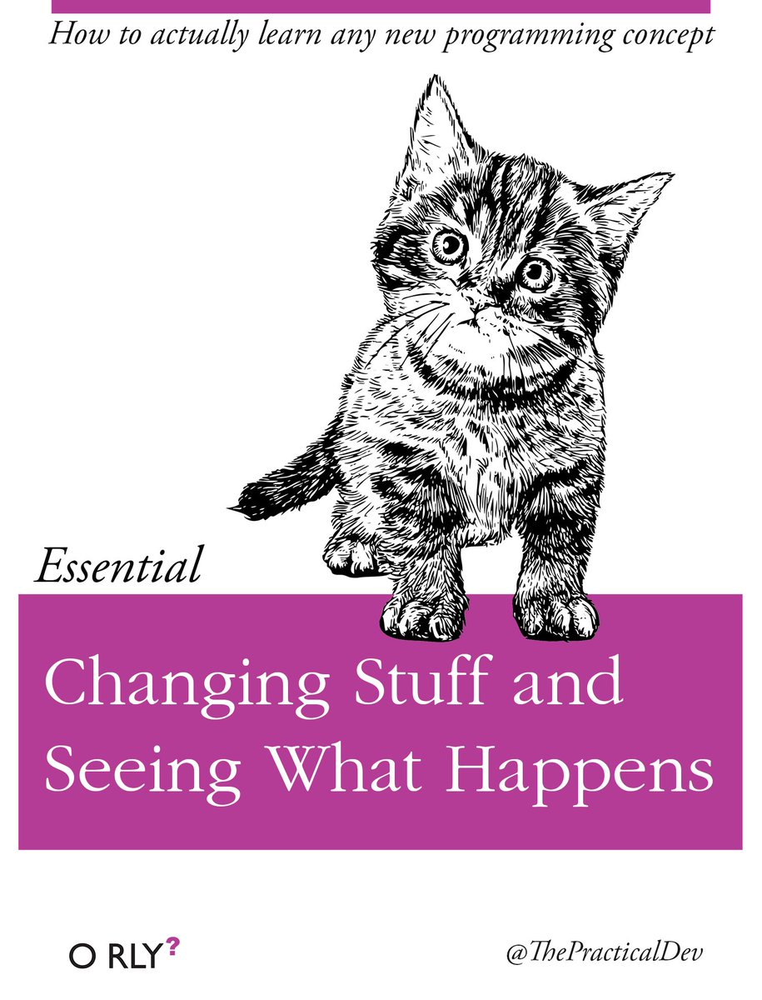
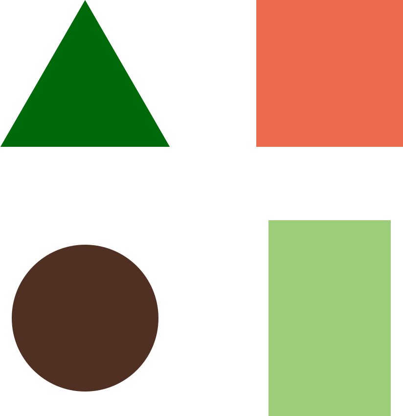
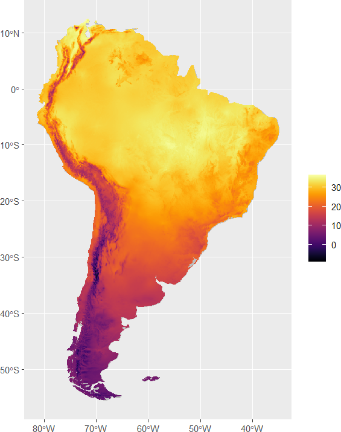

Main References


Daniel Vartanian & Jaqueline Lopes Pereira
University of São Paulo
2025-03-24
This course will introuce you to the R programming language.
Here are the main topics:
(Artwork by Allison Horst)

Grasp the some fundamental principles and knowledge of computer science.
Comprehend the structure and core elements of the R programming language.
Learn essential concepts of data munging.
Understand the basics of data visualization.
Explore fundamental techniques of exploratory data analysis.
Learn basic modeling techniques.
(Future course? An Introduction to Git)

(Artwork by Allison Horst)

The course will take place in one of the laboratories of the Public Health School (FSP) of the University of São Paulo (USP).
The classes are distributed over 5 days, with a total of 9 hours.
Monday (24/03) 13:00-14:00
Tuesday (25/03) 13:00-14:00
Wednesday (26/03) 13:00-18:00
Thursday (27/03) 13:00-14:00
Friday (28/03) 13:00-14:00
Theory ➡️ Practice.
üèã In-class activities.
üìì Final project.
üòå No formal evaluation.
Mistakes will happen. Don’t let them discourage you!
(Artwork by Allison Horst)
Don’t be afraid to ask questions, even if they seem simple. Everyone has to start somewhere!
The programming community is very active and there are many resources available to help you learn and solve problems.
One of the best ways to get help is to search or ask questions on forums like Stack Overflow.

üíæ Bring a flash drive/pen drive.
üë©‚Äçüíª Try to use the same computer for all classes.
üí¨ Always open this presentation in the browser.
❌ Don’t miss a class.
üôã‚Äç‚ôÇÔ∏è Ask questions.
ü§ù Help each other.
üéâ Have fun!
Always have this presentation open in your browser.
We will use it to navigate through the course content.
Use it to access the course materials and exercises.
Tip: Want to create QR Codes like this? Check the qrcode R package.

danielvartan.github.io/r-course
This is a programming course.
As such, we must understand the basics of how a computer works.
It is essential to start from materiality; otherwise, things stop making sense.
If you understand R at its core, you can navigate any challenge you encounter.

(Ariadne’s thread. Artwork by Eroshka)
The science of information processes and their interactions with the world (Denning, 2005).
Computer science studies information processes both artificial and natural (Denning, 2005). It seeks to build a scientific foundation for such topics as computer design, computer programming, information processing, algorithmic solutions of problems, and the algorithmic process itself (Brookshear & Brylow, 2020).

(Photo by Mark Richards)
(Artwork by Pablo Picasso – Le Taureau (1945-46))
Stored-Program Concept (1945) (AKA “von Neumann Architecture”)
First proposed by J. P. Eckert and his team (1944-1945).
Input -> Storage -> Processing -> Output

(Reproduced from Brookshear & Brylow (2020))
| Decimal | Binary |
|---|---|
| 0 | 0 |
| 1 | 1 |
| 2 | 10 |
| 3 | 11 |
| 4 | 100 |
| Addition |
|---|
| 01 + |
| 01 + |
| 01 = |
| 11 |
| x | y | x ∧ y | x ∨ y |
|---|---|---|---|
| 0 | 0 | 0 | 0 |
| 0 | 1 | 0 | 1 |
| 1 | 0 | 0 | 1 |
| 1 | 1 | 1 | 1 |
| x | ¬x |
|---|---|
| 0 | 1 |
| 1 | 0 |

(Adapted from Brookshear & Brylow (2020))
(Video by George Zaidan and Sajan Saini, on TED-ED)
The instructions which govern this operation must be given to the device in absolutely exhaustive detail. […] All these procedures require the use of some code to express the logical and the algebraical definition of the problem under consideration, as well as the necessary numerical material. (von Neumann, 1993)
(Photo by Corbis Historical/Getty Images)
(Artwork by Calltutors)
R is an excellent language to get started with programming because it’s specialized. Unlike some other languages, it doesn’t have an overwhelming amount of features for you to learn.

(Artwork by Allison Horst)
In a general sense, Python is also good for learning how to program, but it is much easier to learn how to work with data in R. In academia, both programming languages are very important.

(Image by Unknown Author)
Programming in movies versus programming in real life:


R is a free and open-source programming language designed for data analysis graphics (Ihaka & Gentleman, 1996).
It was developed by Ross Ihaka and Robert Gentleman in the statistics department at the University of Auckland (New Zealand) in 1991 and introduced to the scientific community in 1993 (Peng, 2022).

(Robert Gentleman (Left) and Ross Ihaka (Right). Photos by an Unknown Author.)


(Artworks by Allison Horst)


Installing R is very simple.
You just need to download the installer from the Comprehensive R Archive Network (CRAN).
Go to Download R for [YOUR OS] and then click on the base link—The base version of R.
Simply follow the instructions of the installer.

An IDE (Integrated Development Environment) is a software that provides a set of tools to help the programmer to write code. It puts together things like a text editor, a console, a debugger, and a file manager.
RStudio is the most popular IDE for R. Like R, it is also free and open-source.

Project-oriented workflow: A project consolidates all related files and resources in one place, ensuring that your work is reproducible and well-organized.
It is important to have a structured project directory. A best practice is to follow the structure made for R Packages (Marwick et al., 2018).
Every data project must be accompanied, at least, by a README file, explaining the project, and a LICENSE file, defining the terms of use of the data (See Open Source Licenses here).

(Reproduced from Marwick et al. (2018))
You can use the usethis R package to create these files.

(Artwork by Allison Horst)
Markdown is a lightweight markup language with plain text formatting syntax. The great thing about Markdown is that you can forget about the formatting and focus on the content.
Quarto Notebooks are a type of Markdown document that allows you to mix code, text, and output in a single document. These slides are all written in Markdown.
Learn more about the Markdown syntax here.

Everything in R is an object.
Everything that happens in R is the result of a function call.
Scalars (0D): 1
Vectors (1D): c(1, 2, 3)
Matrices (2D):matrix(1:9, nrow = 3, ncol = 3)
Arrays (nD):array(1:27, dim = c(3, 3, 3))

(Artwork by Kanishk Srivastava)
The most important feature of R is that it is a vectorized language. This means that most operations are performed element-wise.
This is achieved using the C programming language behind the scenes.

(Artwork by Kanishk Srivastava)
These are part of the atomic data types in R.
logical: TRUE/FALSE.integer: 1, 2, 3.double: 1.0, 2.0, 3.0.character: “Hello, World!”.
character (e.g., “Maria”, “John”)factorinteger (e.g., 1, 2, 3)double (e.g., 1.0, 2.0, 3.0)complex (e.g., 1 + 2i, 3 + 4i)logical (e.g., TRUE, FALSE)Date (e.g., 2023-01-01) (Linear time)POSIXct (e.g., 2023-01-01 00:00:00) (linear time)Interval (e.g., 2023-01-01 00:00:00–2023-12-15 15:40:00) (linear time)Duration (e.g., 1 year, 2 months, 3 days) (linear time)Period (e.g., 1 year, 2 months, 3 days) (linear(ish) time)hms (e.g., 01:00:00) (Circular time)Atomic types are non-recursive objects, i.e., objects that can’t hold themselfs as an entry (e.g., logical, integer, double, character).
Non-Atomic Objects
matrix()) (2D)array()) (nD)list()) (nD)data.frame()) (a special case of list) (2D)list(
list(list(1), list(2)),
list(list("a"), list("b")),
list(TRUE)
)
#> [[1]]
#> [[1]][[1]]
#> [[1]][[1]][[1]]
#> [1] 1
#>
#>
#> [[1]][[2]]
#> [[1]][[2]][[1]]
#> [1] 2
#>
#>
#>
#> [[2]]
#> [[2]][[1]]
#> [[2]][[1]][[1]]
#> [1] "a"
#>
#>
#> [[2]][[2]]
#> [[2]][[2]][[1]]
#> [1] "b"
#>
#>
#>
#> [[3]]
#> [[3]][[1]]
#> [1] TRUELeft Hand Side = Right Hand Side
(Artwork by Allison Horst)
R has strict rules regarding the names of objects.
if, else, TRUE, FALSE).variable-name Bad
variable.name Good, but not advisable
variable_name Good (snake_case) — Most used in R
1variable_name Bad
.variable_name Bad
variableName Good (camelCase)
VariableName Good (PascalCase)
Atomic
`[`() 1 level extractionData Frames
x[i, ] Extract line i
x[, j] Extract column/variable j
x[i, j] Extract line i from column/variable j
Missing values must me explicitly declared in R. For that R uses the NA value (Not Available).
NA comes in different flavors, for example: NA_integer_, NA_real_, NA_character_, NA_complex_.
If you use just NA, R will use the most appropriate type.
Nan (Not a Number)
Tip: See the naniar package.
is.* Functions
üö® Avoid loops if you can.
Use vectorized operations instead (functionals).
A functional is a function that takes a function as an input and returns a vector as output (Wickham, 2019).
It makes the work of the programmer easier, because it allows to apply a function to a vector without the need of a loop. Because these functions are written in C, they are very fast.
R have native functionals (e.g., lapply()), but prefer solutions from the purrr package.
library(microbenchmark)
microbenchmark(
with_for_loop(1:1000),
with_map(1:1000),
times = 100,
check = "equal"
)
#> Unit: microseconds
#> expr min lq mean median uq max
#> with_for_loop(1:1000) 689.858 727.8225 1020.8830 749.2685 786.5570 4296.289
#> with_map(1:1000) 292.288 304.6415 327.2599 317.1095 333.4515 1010.774
#> neval cld
#> 100 a
#> 100 bScoping: The act of finding the value associated with a name.
In R, the fundamental unit of shareable code is the package.
A package bundles together code, data, documentation, and tests, and is easy to share with others (Wickham & Bryan, 2023).
Note: Other programming languages refer to packages as libraries.
R is just the core. It needs packages to do anything useful.
A tipycal installation of R comes with a set of packages, like:
base: Basic R functions (e.g., sum())datasets: Some datasets for testing and teaching (e.g., mtcars)graphics: The basic graphics functions (e.g., plot())grDevices: The graphics devices (e.g., pdf())methods: The built-in object-oriented programming systemparallel: Support for parallel computationstats: Basic statistical functions (e.g., t.test())utils: Utility functions (e.g., install.packages())Based on the atomic types, we can create other types of objects. Using the right kind of object in R is very important, because these objects also include methods to deal with particular types of data.
For example, time can be expressed in diffent ways, like linear time (e.g., durations, periods, data-time, intervals) and circular time (e.g., time of day). We can also have time series, which are a sequence of data points taken at successive equally spaced points in time.
Date
(Days since 1970-01-01 (UNIX epoch))
üö® Only if Necessary
Your code must speak for itself.
In data analysis code, only use comments to record important things. If you need comments to explain what your code is doing, consider rewriting your code to be clearer (Wickham, n.d.).
One the most important things in programming is to know how to find help. In R, you can use the help() function to get help on a function or package.
Since R has more an academic focus, documentation is usually plentiful and very well written.

Tidyverse is a framework and a collection of R packages designed for data science. All packages share an underlying design philosophy (The Tidy Manifesto), grammar, and data structures.
It was created by Hadley Wickham, a prominent figure in the R community and author of several key references for this course. Hadley Wickham’s contributions have significantly shaped modern R programming.
Main Tidyverse Packages
readr: Read flat files (csv, tsv, fwf) into Rtibble: A modern re-imagining of the data framestringr: A fresh approach to string manipulation in Rlubridate: Make working with dates in R just that little bit easierdplyr: A grammar of data manipulationtidyr: Tidy messy datapurrr: A functional programming toolkit for Rforcats: Tools for working with categorical variables (factors)ggplot2: An implementation of the Grammar of Graphics in R
The importance of relying on good packages is crucial.
rOpenSci project is a community of researchers and developers working on open science and open data. They develop R packages that allow access to data and tools from a wide range of sources.
All packages go through a peer-review process, which ensures that they are well written and reliable.
You can do most of the things you need with the packages that come bundled with R. However, that is not the most efficient way to do things today.
In this course we are going to focus on the Tidyverse and rOpenSci packages, which are the most modern and efficient way to work with data in R.
If you want a depper understanding of the R language, we encourage you to explore the base R solutions.
You can learn a lot about a person just by looking at their code üëÄ.
Variable and function names should use only lowercase letters, numbers, and . Use underscores () (so called snake case) to separate words within a name.
The tidyverse has four guiding principles:
Data science is the study of the generalizable extraction of knowledge from data (Dhar, 2023).
For some, data science is just statistics (Broman, 2013) (hype statistics). For others, it’s a new interdisciplinary field that synthesizes statistics, informatics, computing, communication, management, and sociology (Cao, 2017).

(Reproduced from Wickham et al. (2023))
You only analyze or visualize data when you already have clean, tidy, and validated data.
The processing for getting data ready for analysis is called data munging. You cans also see it as data wrangling (usually when dealing with models) or, simply, data cleaning.
Data scientists, according to interviews and expert estimates, spend from 50 percent to 80 percent of their time mired in this more mundane labor of collecting and preparing unruly digital data, before it can be explored for useful nuggets (Lohr, 2014).
Data < Information < Knowledge < Wisdom
Data versus the interpretation of the data
Data is an abstraction. It’s a representation of the world around us. Without context, it has no meaning.
(Artwork by Pablo Picasso – Le Taureau (1945-46))
A value chain, roughly, consists of a sequence of activities that increase the value of a product step by step. […] One should realize that although the schema nicely organizes data analysis activities, in practice, the process is hardly linear (van der Loo & Jonge, 2018).
(Reproduced from van der Loo & Jonge (2018))
With raw data, we mean the data as it arrives at the desk of the analyst. The state of such data may of course vary enormously, depending on the data source. (van der Loo & Jonge, 2018).
If the researcher has made any modifications to the raw data, it is not the raw form of the data. (S. E. Ellis & Leek, 2018).

(Photo by Unknown Author)
Data validation techniques are used to ensure that data is accurate, consistent, and reliable.
Examples
(Artwork by Allison Horst)
(Artwork by Allison Horst)
(Reproduced from Wickham et al. (2023))
(Artwork by Allison Horst)

Data can be hierarchical, with multiple levels of organization.
Interest rate representing the adjusted average rate of overnight repurchase agreements backed by Brazil’s federal government securities held in the Special System for Settlement and Custody (SELIC). Reported in % per day.
library(jsonlite)
paste0(
"https://api.bcb.gov.br/dados/serie/",
"bcdata.sgs.11", "/",
"dados", "?",
"formato=json", "&",
"dataInicial=01/12/2024", "&",
"dataFinal=03/12/2024"
) |>
read_json()
#> [[1]]
#> [[1]]$data
# [1] "02/12/2024"
# [[1]]$valor
# [1] "0.041957"
# [[2]]
# [[2]]$data
# [1] "03/12/2024"
# [[2]]$valor
# [1] "0.041957"
Not all data is tabular; spatial data can be very large and complex.
Excel cannot handle spatial data, and GUI-based statistical softwares, when capable of handling spatial data, are often limited and struggles with performance issues.
Projected monthly average maximum temperatures (°C) for June 2021–2040, based on the global climate model (GCM) ACCESS-CM2.

(WorldClim 2.1 data. June mean temperature (°C) in South America (1970-2000))
Spreadsheet syndrome is a term used to describe the problems that arise from using spreadsheets to manage data.

(Figure by 9Dots Management)
Developed by E. F. Codd of IBM in 1970, the relational model is based on mathematical set theory and represents data as independent relations. Each relation (table) is conceptually represented as a two-dimensional structure of intersecting rows and columns. The relations are related to each other through the sharing of common entity characteristics (values in columns) (Coronel & Morris, 2019).

Documentation is essential for data sharing and reproducibility
Data dictionaries/Codebooks (e.g., SISVAN)

(Reproduced from S. E. Ellis & Leek (2018))
There are many open data formats available for researchers to use. Open can mean different things, but in this context, it means that the format is not proprietary and can be used by anyone. Here are some examples:
⚠️ Excel files are not a open data format! ⚠️
It will depend on what king of data you are working with.
Different from Excel or GUI-based statistical software, R can deal with any kind of data.
utils::read.csv(), readr::read_csv()
terra::vect(), st::st_read()
readxl::read_excel(), haven::read_dta() (Stata), haven::read_sav() (SPSS), haven::read_sas() (SAS)
Created by the great Allison Horst, the author of these beautiful illustrations.
The palmerpenguins data contains size measurements for three penguin species observed on three islands in the Palmer Archipelago, Antarctica.
These data were collected from 2007–2009 by Dr. Kristen Gorman with the Palmer Station Long Term Ecological Research Program, part of th US Long Term Ecological Research Network.
We will use this package in the first part of the course to get familiar with R.


(Artwork by Allison Horst)
Known your data.
data in the root of your project.The data documentation can be accessed by running:
You can also use the following code to open the file:
Before importing the data to R, let’s first take a look at the content of this data file in a text editor.
palmerpenguins-raw.csv
studyName,Sample Number,Species,Region,Island,Stage,Individual ID,Clutch Completion,Date Egg,Culmen Length (mm),Culmen Depth (mm),Flipper Length (mm),Body Mass (g),Sex,Delta 15 N (o/oo),Delta 13 C (o/oo),Comments
PAL0708,1,Adelie Penguin (Pygoscelis adeliae),Anvers,Torgersen,"Adult, 1 Egg Stage",N1A1,Yes,2007-11-11,39.1,18.7,181,3750,MALE,NA,NA,Not enough blood for isotopes.
PAL0708,2,Adelie Penguin (Pygoscelis adeliae),Anvers,Torgersen,"Adult, 1 Egg Stage",N1A2,Yes,2007-11-11,39.5,17.4,186,3800,FEMALE,8.94956,-24.69454,NA
PAL0708,3,Adelie Penguin (Pygoscelis adeliae),Anvers,Torgersen,"Adult, 1 Egg Stage",N2A1,Yes,2007-11-16,40.3,18,195,3250,FEMALE,8.36821,-25.33302,NA
PAL0708,4,Adelie Penguin (Pygoscelis adeliae),Anvers,Torgersen,"Adult, 1 Egg Stage",N2A2,Yes,2007-11-16,NA,NA,NA,NA,NA,NA,NA,Adult not sampled.
PAL0708,5,Adelie Penguin (Pygoscelis adeliae),Anvers,Torgersen,"Adult, 1 Egg Stage",N3A1,Yes,2007-11-16,36.7,19.3,193,3450,FEMALE,8.76651,-25.32426,NA
PAL0708,6,Adelie Penguin (Pygoscelis adeliae),Anvers,Torgersen,"Adult, 1 Egg Stage",N3A2,Yes,2007-11-16,39.3,20.6,190,3650,MALE,8.66496,-25.29805,NA
PAL0708,7,Adelie Penguin (Pygoscelis adeliae),Anvers,Torgersen,"Adult, 1 Egg Stage",N4A1,No,2007-11-15,38.9,17.8,181,3625,FEMALE,9.18718,-25.21799,Nest never observed with full clutch.
PAL0708,8,Adelie Penguin (Pygoscelis adeliae),Anvers,Torgersen,"Adult, 1 Egg Stage",N4A2,No,2007-11-15,39.2,19.6,195,4675,MALE,9.4606,-24.89958,Nest never observed with full clutch.
PAL0708,9,Adelie Penguin (Pygoscelis adeliae),Anvers,Torgersen,"Adult, 1 Egg Stage",N5A1,Yes,2007-11-09,34.1,18.1,193,3475,NA,NA,NA,No blood sample obtained.
PAL0708,10,Adelie Penguin (Pygoscelis adeliae),Anvers,Torgersen,"Adult, 1 Egg Stage",N5A2,Yes,2007-11-09,42,20.2,190,4250,NA,9.13362,-25.09368,No blood sample obtained for sexing.
PAL0708,11,Adelie Penguin (Pygoscelis adeliae),Anvers,Torgersen,"Adult, 1 Egg Stage",N6A1,Yes,2007-11-09,37.8,17.1,186,3300,NA,8.63243,-25.21315,No blood sample obtained for sexing.
PAL0708,12,Adelie Penguin (Pygoscelis adeliae),Anvers,Torgersen,"Adult, 1 Egg Stage",N6A2,Yes,2007-11-09,37.8,17.3,180,3700,NA,NA,NA,No blood sample obtained.
PAL0708,13,Adelie Penguin (Pygoscelis adeliae),Anvers,Torgersen,"Adult, 1 Egg Stage",N7A1,Yes,2007-11-15,41.1,17.6,182,3200,FEMALE,NA,NA,Not enough blood for isotopes.
PAL0708,14,Adelie Penguin (Pygoscelis adeliae),Anvers,Torgersen,"Adult, 1 Egg Stage",N7A2,Yes,2007-11-15,38.6,21.2,191,3800,MALE,NA,NA,Not enough blood for isotopes.
PAL0708,15,Adelie Penguin (Pygoscelis adeliae),Anvers,Torgersen,"Adult, 1 Egg Stage",N8A1,Yes,2007-11-16,34.6,21.1,198,4400,MALE,8.55583,-25.22588,NA
PAL0708,16,Adelie Penguin (Pygoscelis adeliae),Anvers,Torgersen,"Adult, 1 Egg Stage",N8A2,Yes,2007-11-16,36.6,17.8,185,3700,FEMALE,NA,NA,Not enough blood for isotopes.
PAL0708,17,Adelie Penguin (Pygoscelis adeliae),Anvers,Torgersen,"Adult, 1 Egg Stage",N9A1,Yes,2007-11-12,38.7,19,195,3450,FEMALE,9.18528,-25.06691,NAPointing to files inside your project.
here Packagehere is a package that helps you use relative paths in your R projects.
It turns file management much easier.

(Artwork by Allison Horst)
readr Package
library(dplyr)
data |> glimpse()
#> Rows: 344
#> Columns: 17
#> $ studyName <chr> "PAL0708", "PAL0708", "PAL0708", "PAL0708", "PAL…
#> $ `Sample Number` <chr> "1", "2", "3", "4", "5", "6", "7", "8", "9", "10…
#> $ Species <chr> "Adelie Penguin (Pygoscelis adeliae)", "Adelie P…
#> $ Region <chr> "Anvers", "Anvers", "Anvers", "Anvers", "Anvers"…
#> $ Island <chr> "Torgersen", "Torgersen", "Torgersen", "Torgerse…
#> $ Stage <chr> "Adult, 1 Egg Stage", "Adult, 1 Egg Stage", "Adu…
#> $ `Individual ID` <chr> "N1A1", "N1A2", "N2A1", "N2A2", "N3A1", "N3A2", …
#> $ `Clutch Completion` <chr> "Yes", "Yes", "Yes", "Yes", "Yes", "Yes", "No", …
#> $ `Date Egg` <chr> "2007-11-11", "2007-11-11", "2007-11-16", "2007-…
#> $ `Culmen Length (mm)` <chr> "39.1", "39.5", "40.3", NA, "36.7", "39.3", "38.…
#> $ `Culmen Depth (mm)` <chr> "18.7", "17.4", "18", NA, "19.3", "20.6", "17.8"…
#> $ `Flipper Length (mm)` <chr> "181", "186", "195", NA, "193", "190", "181", "1…
#> $ `Body Mass (g)` <chr> "3750", "3800", "3250", NA, "3450", "3650", "362…
#> $ Sex <chr> "MALE", "FEMALE", "FEMALE", NA, "FEMALE", "MALE"…
#> $ `Delta 15 N (o/oo)` <chr> NA, "8.94956", "8.36821", NA, "8.76651", "8.6649…
#> $ `Delta 13 C (o/oo)` <chr> NA, "-24.69454", "-25.33302", NA, "-25.32426", "…
#> $ Comments <chr> "Not enough blood for isotopes.", NA, NA, "Adult…janitor Package
janitor provides simple functions for examining and cleaning dirty data.
clean_names()(Artwork by Allison Horst)
clean_names()data |> names()
#> [1] "studyName" "Sample Number" "Species"
#> [4] "Region" "Island" "Stage"
#> [7] "Individual ID" "Clutch Completion" "Date Egg"
#> [10] "Culmen Length (mm)" "Culmen Depth (mm)" "Flipper Length (mm)"
#> [13] "Body Mass (g)" "Sex" "Delta 15 N (o/oo)"
#> [16] "Delta 13 C (o/oo)" "Comments"tidyr Package
tidyr provides a set of functions that help you to tidy your data.
tibble Packagetibble is a modern reimagining of the data frame, keeping what time has proven to be effective, and throwing out what is not.
Using R native data.frame class
data |> as.data.frame()
#> study_name sample_number species region
#> 1 PAL0708 1 Adelie Penguin (Pygoscelis adeliae) Anvers
#> 2 PAL0708 2 Adelie Penguin (Pygoscelis adeliae) Anvers
#> 3 PAL0708 3 Adelie Penguin (Pygoscelis adeliae) Anvers
#> 4 PAL0708 4 Adelie Penguin (Pygoscelis adeliae) Anvers
#> 5 PAL0708 5 Adelie Penguin (Pygoscelis adeliae) Anvers
#> 6 PAL0708 6 Adelie Penguin (Pygoscelis adeliae) Anvers
#> 7 PAL0708 7 Adelie Penguin (Pygoscelis adeliae) Anvers
#> 8 PAL0708 8 Adelie Penguin (Pygoscelis adeliae) Anvers
#> 9 PAL0708 9 Adelie Penguin (Pygoscelis adeliae) Anvers
#> 10 PAL0708 10 Adelie Penguin (Pygoscelis adeliae) Anvers
#> 11 PAL0708 11 Adelie Penguin (Pygoscelis adeliae) Anvers
#> 12 PAL0708 12 Adelie Penguin (Pygoscelis adeliae) Anvers
#> 13 PAL0708 13 Adelie Penguin (Pygoscelis adeliae) Anvers
#> 14 PAL0708 14 Adelie Penguin (Pygoscelis adeliae) Anvers
#> 15 PAL0708 15 Adelie Penguin (Pygoscelis adeliae) Anvers
#> 16 PAL0708 16 Adelie Penguin (Pygoscelis adeliae) Anvers
#> 17 PAL0708 17 Adelie Penguin (Pygoscelis adeliae) Anvers
#> 18 PAL0708 18 Adelie Penguin (Pygoscelis adeliae) Anvers
#> 19 PAL0708 19 Adelie Penguin (Pygoscelis adeliae) Anvers
#> 20 PAL0708 20 Adelie Penguin (Pygoscelis adeliae) Anvers
#> 21 PAL0708 21 Adelie Penguin (Pygoscelis adeliae) Anvers
#> 22 PAL0708 22 Adelie Penguin (Pygoscelis adeliae) Anvers
#> 23 PAL0708 23 Adelie Penguin (Pygoscelis adeliae) Anvers
#> 24 PAL0708 24 Adelie Penguin (Pygoscelis adeliae) Anvers
#> 25 PAL0708 25 Adelie Penguin (Pygoscelis adeliae) Anvers
#> 26 PAL0708 26 Adelie Penguin (Pygoscelis adeliae) Anvers
#> 27 PAL0708 27 Adelie Penguin (Pygoscelis adeliae) Anvers
#> 28 PAL0708 28 Adelie Penguin (Pygoscelis adeliae) Anvers
#> 29 PAL0708 29 Adelie Penguin (Pygoscelis adeliae) Anvers
#> 30 PAL0708 30 Adelie Penguin (Pygoscelis adeliae) Anvers
#> 31 PAL0708 31 Adelie Penguin (Pygoscelis adeliae) Anvers
#> 32 PAL0708 32 Adelie Penguin (Pygoscelis adeliae) Anvers
#> 33 PAL0708 33 Adelie Penguin (Pygoscelis adeliae) Anvers
#> 34 PAL0708 34 Adelie Penguin (Pygoscelis adeliae) Anvers
#> 35 PAL0708 35 Adelie Penguin (Pygoscelis adeliae) Anvers
#> 36 PAL0708 36 Adelie Penguin (Pygoscelis adeliae) Anvers
#> 37 PAL0708 37 Adelie Penguin (Pygoscelis adeliae) Anvers
#> 38 PAL0708 38 Adelie Penguin (Pygoscelis adeliae) Anvers
#> 39 PAL0708 39 Adelie Penguin (Pygoscelis adeliae) Anvers
#> 40 PAL0708 40 Adelie Penguin (Pygoscelis adeliae) Anvers
#> 41 PAL0708 41 Adelie Penguin (Pygoscelis adeliae) Anvers
#> 42 PAL0708 42 Adelie Penguin (Pygoscelis adeliae) Anvers
#> 43 PAL0708 43 Adelie Penguin (Pygoscelis adeliae) Anvers
#> 44 PAL0708 44 Adelie Penguin (Pygoscelis adeliae) Anvers
#> 45 PAL0708 45 Adelie Penguin (Pygoscelis adeliae) Anvers
#> 46 PAL0708 46 Adelie Penguin (Pygoscelis adeliae) Anvers
#> 47 PAL0708 47 Adelie Penguin (Pygoscelis adeliae) Anvers
#> 48 PAL0708 48 Adelie Penguin (Pygoscelis adeliae) Anvers
#> 49 PAL0708 49 Adelie Penguin (Pygoscelis adeliae) Anvers
#> 50 PAL0708 50 Adelie Penguin (Pygoscelis adeliae) Anvers
#> 51 PAL0809 51 Adelie Penguin (Pygoscelis adeliae) Anvers
#> 52 PAL0809 52 Adelie Penguin (Pygoscelis adeliae) Anvers
#> 53 PAL0809 53 Adelie Penguin (Pygoscelis adeliae) Anvers
#> 54 PAL0809 54 Adelie Penguin (Pygoscelis adeliae) Anvers
#> 55 PAL0809 55 Adelie Penguin (Pygoscelis adeliae) Anvers
#> 56 PAL0809 56 Adelie Penguin (Pygoscelis adeliae) Anvers
#> 57 PAL0809 57 Adelie Penguin (Pygoscelis adeliae) Anvers
#> 58 PAL0809 58 Adelie Penguin (Pygoscelis adeliae) Anvers
#> 59 PAL0809 59 Adelie Penguin (Pygoscelis adeliae) Anvers
#> 60 PAL0809 60 Adelie Penguin (Pygoscelis adeliae) Anvers
#> 61 PAL0809 61 Adelie Penguin (Pygoscelis adeliae) Anvers
#> 62 PAL0809 62 Adelie Penguin (Pygoscelis adeliae) Anvers
#> 63 PAL0809 63 Adelie Penguin (Pygoscelis adeliae) Anvers
#> 64 PAL0809 64 Adelie Penguin (Pygoscelis adeliae) Anvers
#> 65 PAL0809 65 Adelie Penguin (Pygoscelis adeliae) Anvers
#> 66 PAL0809 66 Adelie Penguin (Pygoscelis adeliae) Anvers
#> 67 PAL0809 67 Adelie Penguin (Pygoscelis adeliae) Anvers
#> 68 PAL0809 68 Adelie Penguin (Pygoscelis adeliae) Anvers
#> 69 PAL0809 69 Adelie Penguin (Pygoscelis adeliae) Anvers
#> 70 PAL0809 70 Adelie Penguin (Pygoscelis adeliae) Anvers
#> 71 PAL0809 71 Adelie Penguin (Pygoscelis adeliae) Anvers
#> 72 PAL0809 72 Adelie Penguin (Pygoscelis adeliae) Anvers
#> 73 PAL0809 73 Adelie Penguin (Pygoscelis adeliae) Anvers
#> 74 PAL0809 74 Adelie Penguin (Pygoscelis adeliae) Anvers
#> 75 PAL0809 75 Adelie Penguin (Pygoscelis adeliae) Anvers
#> 76 PAL0809 76 Adelie Penguin (Pygoscelis adeliae) Anvers
#> 77 PAL0809 77 Adelie Penguin (Pygoscelis adeliae) Anvers
#> 78 PAL0809 78 Adelie Penguin (Pygoscelis adeliae) Anvers
#> 79 PAL0809 79 Adelie Penguin (Pygoscelis adeliae) Anvers
#> 80 PAL0809 80 Adelie Penguin (Pygoscelis adeliae) Anvers
#> 81 PAL0809 81 Adelie Penguin (Pygoscelis adeliae) Anvers
#> 82 PAL0809 82 Adelie Penguin (Pygoscelis adeliae) Anvers
#> 83 PAL0809 83 Adelie Penguin (Pygoscelis adeliae) Anvers
#> 84 PAL0809 84 Adelie Penguin (Pygoscelis adeliae) Anvers
#> 85 PAL0809 85 Adelie Penguin (Pygoscelis adeliae) Anvers
#> 86 PAL0809 86 Adelie Penguin (Pygoscelis adeliae) Anvers
#> 87 PAL0809 87 Adelie Penguin (Pygoscelis adeliae) Anvers
#> 88 PAL0809 88 Adelie Penguin (Pygoscelis adeliae) Anvers
#> 89 PAL0809 89 Adelie Penguin (Pygoscelis adeliae) Anvers
#> 90 PAL0809 90 Adelie Penguin (Pygoscelis adeliae) Anvers
#> 91 PAL0809 91 Adelie Penguin (Pygoscelis adeliae) Anvers
#> 92 PAL0809 92 Adelie Penguin (Pygoscelis adeliae) Anvers
#> 93 PAL0809 93 Adelie Penguin (Pygoscelis adeliae) Anvers
#> 94 PAL0809 94 Adelie Penguin (Pygoscelis adeliae) Anvers
#> 95 PAL0809 95 Adelie Penguin (Pygoscelis adeliae) Anvers
#> 96 PAL0809 96 Adelie Penguin (Pygoscelis adeliae) Anvers
#> 97 PAL0809 97 Adelie Penguin (Pygoscelis adeliae) Anvers
#> 98 PAL0809 98 Adelie Penguin (Pygoscelis adeliae) Anvers
#> 99 PAL0809 99 Adelie Penguin (Pygoscelis adeliae) Anvers
#> 100 PAL0809 100 Adelie Penguin (Pygoscelis adeliae) Anvers
#> 101 PAL0910 101 Adelie Penguin (Pygoscelis adeliae) Anvers
#> 102 PAL0910 102 Adelie Penguin (Pygoscelis adeliae) Anvers
#> 103 PAL0910 103 Adelie Penguin (Pygoscelis adeliae) Anvers
#> 104 PAL0910 104 Adelie Penguin (Pygoscelis adeliae) Anvers
#> 105 PAL0910 105 Adelie Penguin (Pygoscelis adeliae) Anvers
#> 106 PAL0910 106 Adelie Penguin (Pygoscelis adeliae) Anvers
#> 107 PAL0910 107 Adelie Penguin (Pygoscelis adeliae) Anvers
#> 108 PAL0910 108 Adelie Penguin (Pygoscelis adeliae) Anvers
#> 109 PAL0910 109 Adelie Penguin (Pygoscelis adeliae) Anvers
#> 110 PAL0910 110 Adelie Penguin (Pygoscelis adeliae) Anvers
#> 111 PAL0910 111 Adelie Penguin (Pygoscelis adeliae) Anvers
#> 112 PAL0910 112 Adelie Penguin (Pygoscelis adeliae) Anvers
#> 113 PAL0910 113 Adelie Penguin (Pygoscelis adeliae) Anvers
#> 114 PAL0910 114 Adelie Penguin (Pygoscelis adeliae) Anvers
#> 115 PAL0910 115 Adelie Penguin (Pygoscelis adeliae) Anvers
#> 116 PAL0910 116 Adelie Penguin (Pygoscelis adeliae) Anvers
#> 117 PAL0910 117 Adelie Penguin (Pygoscelis adeliae) Anvers
#> 118 PAL0910 118 Adelie Penguin (Pygoscelis adeliae) Anvers
#> 119 PAL0910 119 Adelie Penguin (Pygoscelis adeliae) Anvers
#> 120 PAL0910 120 Adelie Penguin (Pygoscelis adeliae) Anvers
#> 121 PAL0910 121 Adelie Penguin (Pygoscelis adeliae) Anvers
#> 122 PAL0910 122 Adelie Penguin (Pygoscelis adeliae) Anvers
#> 123 PAL0910 123 Adelie Penguin (Pygoscelis adeliae) Anvers
#> 124 PAL0910 124 Adelie Penguin (Pygoscelis adeliae) Anvers
#> 125 PAL0910 125 Adelie Penguin (Pygoscelis adeliae) Anvers
#> 126 PAL0910 126 Adelie Penguin (Pygoscelis adeliae) Anvers
#> 127 PAL0910 127 Adelie Penguin (Pygoscelis adeliae) Anvers
#> 128 PAL0910 128 Adelie Penguin (Pygoscelis adeliae) Anvers
#> 129 PAL0910 129 Adelie Penguin (Pygoscelis adeliae) Anvers
#> 130 PAL0910 130 Adelie Penguin (Pygoscelis adeliae) Anvers
#> 131 PAL0910 131 Adelie Penguin (Pygoscelis adeliae) Anvers
#> 132 PAL0910 132 Adelie Penguin (Pygoscelis adeliae) Anvers
#> 133 PAL0910 133 Adelie Penguin (Pygoscelis adeliae) Anvers
#> 134 PAL0910 134 Adelie Penguin (Pygoscelis adeliae) Anvers
#> 135 PAL0910 135 Adelie Penguin (Pygoscelis adeliae) Anvers
#> 136 PAL0910 136 Adelie Penguin (Pygoscelis adeliae) Anvers
#> 137 PAL0910 137 Adelie Penguin (Pygoscelis adeliae) Anvers
#> 138 PAL0910 138 Adelie Penguin (Pygoscelis adeliae) Anvers
#> 139 PAL0910 139 Adelie Penguin (Pygoscelis adeliae) Anvers
#> 140 PAL0910 140 Adelie Penguin (Pygoscelis adeliae) Anvers
#> 141 PAL0910 141 Adelie Penguin (Pygoscelis adeliae) Anvers
#> 142 PAL0910 142 Adelie Penguin (Pygoscelis adeliae) Anvers
#> 143 PAL0910 143 Adelie Penguin (Pygoscelis adeliae) Anvers
#> 144 PAL0910 144 Adelie Penguin (Pygoscelis adeliae) Anvers
#> 145 PAL0910 145 Adelie Penguin (Pygoscelis adeliae) Anvers
#> 146 PAL0910 146 Adelie Penguin (Pygoscelis adeliae) Anvers
#> 147 PAL0910 147 Adelie Penguin (Pygoscelis adeliae) Anvers
#> 148 PAL0910 148 Adelie Penguin (Pygoscelis adeliae) Anvers
#> 149 PAL0910 149 Adelie Penguin (Pygoscelis adeliae) Anvers
#> 150 PAL0910 150 Adelie Penguin (Pygoscelis adeliae) Anvers
#> 151 PAL0910 151 Adelie Penguin (Pygoscelis adeliae) Anvers
#> 152 PAL0910 152 Adelie Penguin (Pygoscelis adeliae) Anvers
#> 153 PAL0708 1 Gentoo penguin (Pygoscelis papua) Anvers
#> 154 PAL0708 2 Gentoo penguin (Pygoscelis papua) Anvers
#> 155 PAL0708 3 Gentoo penguin (Pygoscelis papua) Anvers
#> 156 PAL0708 4 Gentoo penguin (Pygoscelis papua) Anvers
#> 157 PAL0708 5 Gentoo penguin (Pygoscelis papua) Anvers
#> 158 PAL0708 6 Gentoo penguin (Pygoscelis papua) Anvers
#> 159 PAL0708 7 Gentoo penguin (Pygoscelis papua) Anvers
#> 160 PAL0708 8 Gentoo penguin (Pygoscelis papua) Anvers
#> 161 PAL0708 9 Gentoo penguin (Pygoscelis papua) Anvers
#> 162 PAL0708 10 Gentoo penguin (Pygoscelis papua) Anvers
#> 163 PAL0708 11 Gentoo penguin (Pygoscelis papua) Anvers
#> 164 PAL0708 12 Gentoo penguin (Pygoscelis papua) Anvers
#> 165 PAL0708 13 Gentoo penguin (Pygoscelis papua) Anvers
#> 166 PAL0708 14 Gentoo penguin (Pygoscelis papua) Anvers
#> 167 PAL0708 15 Gentoo penguin (Pygoscelis papua) Anvers
#> 168 PAL0708 16 Gentoo penguin (Pygoscelis papua) Anvers
#> 169 PAL0708 17 Gentoo penguin (Pygoscelis papua) Anvers
#> 170 PAL0708 18 Gentoo penguin (Pygoscelis papua) Anvers
#> 171 PAL0708 19 Gentoo penguin (Pygoscelis papua) Anvers
#> 172 PAL0708 20 Gentoo penguin (Pygoscelis papua) Anvers
#> 173 PAL0708 21 Gentoo penguin (Pygoscelis papua) Anvers
#> 174 PAL0708 22 Gentoo penguin (Pygoscelis papua) Anvers
#> 175 PAL0708 23 Gentoo penguin (Pygoscelis papua) Anvers
#> 176 PAL0708 24 Gentoo penguin (Pygoscelis papua) Anvers
#> 177 PAL0708 25 Gentoo penguin (Pygoscelis papua) Anvers
#> 178 PAL0708 26 Gentoo penguin (Pygoscelis papua) Anvers
#> 179 PAL0708 27 Gentoo penguin (Pygoscelis papua) Anvers
#> 180 PAL0708 28 Gentoo penguin (Pygoscelis papua) Anvers
#> 181 PAL0708 29 Gentoo penguin (Pygoscelis papua) Anvers
#> 182 PAL0708 30 Gentoo penguin (Pygoscelis papua) Anvers
#> 183 PAL0708 31 Gentoo penguin (Pygoscelis papua) Anvers
#> 184 PAL0708 32 Gentoo penguin (Pygoscelis papua) Anvers
#> 185 PAL0708 33 Gentoo penguin (Pygoscelis papua) Anvers
#> 186 PAL0708 34 Gentoo penguin (Pygoscelis papua) Anvers
#> 187 PAL0809 35 Gentoo penguin (Pygoscelis papua) Anvers
#> 188 PAL0809 36 Gentoo penguin (Pygoscelis papua) Anvers
#> 189 PAL0809 37 Gentoo penguin (Pygoscelis papua) Anvers
#> 190 PAL0809 38 Gentoo penguin (Pygoscelis papua) Anvers
#> 191 PAL0809 39 Gentoo penguin (Pygoscelis papua) Anvers
#> 192 PAL0809 40 Gentoo penguin (Pygoscelis papua) Anvers
#> 193 PAL0809 41 Gentoo penguin (Pygoscelis papua) Anvers
#> 194 PAL0809 42 Gentoo penguin (Pygoscelis papua) Anvers
#> 195 PAL0809 43 Gentoo penguin (Pygoscelis papua) Anvers
#> 196 PAL0809 44 Gentoo penguin (Pygoscelis papua) Anvers
#> 197 PAL0809 45 Gentoo penguin (Pygoscelis papua) Anvers
#> 198 PAL0809 46 Gentoo penguin (Pygoscelis papua) Anvers
#> 199 PAL0809 47 Gentoo penguin (Pygoscelis papua) Anvers
#> 200 PAL0809 48 Gentoo penguin (Pygoscelis papua) Anvers
#> 201 PAL0809 49 Gentoo penguin (Pygoscelis papua) Anvers
#> 202 PAL0809 50 Gentoo penguin (Pygoscelis papua) Anvers
#> 203 PAL0809 51 Gentoo penguin (Pygoscelis papua) Anvers
#> 204 PAL0809 52 Gentoo penguin (Pygoscelis papua) Anvers
#> 205 PAL0809 53 Gentoo penguin (Pygoscelis papua) Anvers
#> 206 PAL0809 54 Gentoo penguin (Pygoscelis papua) Anvers
#> 207 PAL0809 55 Gentoo penguin (Pygoscelis papua) Anvers
#> 208 PAL0809 56 Gentoo penguin (Pygoscelis papua) Anvers
#> 209 PAL0809 57 Gentoo penguin (Pygoscelis papua) Anvers
#> 210 PAL0809 58 Gentoo penguin (Pygoscelis papua) Anvers
#> 211 PAL0809 59 Gentoo penguin (Pygoscelis papua) Anvers
#> 212 PAL0809 60 Gentoo penguin (Pygoscelis papua) Anvers
#> 213 PAL0809 61 Gentoo penguin (Pygoscelis papua) Anvers
#> 214 PAL0809 62 Gentoo penguin (Pygoscelis papua) Anvers
#> 215 PAL0809 63 Gentoo penguin (Pygoscelis papua) Anvers
#> 216 PAL0809 64 Gentoo penguin (Pygoscelis papua) Anvers
#> 217 PAL0809 65 Gentoo penguin (Pygoscelis papua) Anvers
#> 218 PAL0809 66 Gentoo penguin (Pygoscelis papua) Anvers
#> 219 PAL0809 67 Gentoo penguin (Pygoscelis papua) Anvers
#> 220 PAL0809 68 Gentoo penguin (Pygoscelis papua) Anvers
#> 221 PAL0809 69 Gentoo penguin (Pygoscelis papua) Anvers
#> 222 PAL0809 70 Gentoo penguin (Pygoscelis papua) Anvers
#> 223 PAL0809 71 Gentoo penguin (Pygoscelis papua) Anvers
#> 224 PAL0809 72 Gentoo penguin (Pygoscelis papua) Anvers
#> 225 PAL0809 73 Gentoo penguin (Pygoscelis papua) Anvers
#> 226 PAL0809 74 Gentoo penguin (Pygoscelis papua) Anvers
#> 227 PAL0809 75 Gentoo penguin (Pygoscelis papua) Anvers
#> 228 PAL0809 76 Gentoo penguin (Pygoscelis papua) Anvers
#> 229 PAL0809 77 Gentoo penguin (Pygoscelis papua) Anvers
#> 230 PAL0809 78 Gentoo penguin (Pygoscelis papua) Anvers
#> 231 PAL0809 79 Gentoo penguin (Pygoscelis papua) Anvers
#> 232 PAL0809 80 Gentoo penguin (Pygoscelis papua) Anvers
#> 233 PAL0910 81 Gentoo penguin (Pygoscelis papua) Anvers
#> 234 PAL0910 82 Gentoo penguin (Pygoscelis papua) Anvers
#> 235 PAL0910 83 Gentoo penguin (Pygoscelis papua) Anvers
#> 236 PAL0910 84 Gentoo penguin (Pygoscelis papua) Anvers
#> 237 PAL0910 85 Gentoo penguin (Pygoscelis papua) Anvers
#> 238 PAL0910 86 Gentoo penguin (Pygoscelis papua) Anvers
#> 239 PAL0910 87 Gentoo penguin (Pygoscelis papua) Anvers
#> 240 PAL0910 88 Gentoo penguin (Pygoscelis papua) Anvers
#> 241 PAL0910 89 Gentoo penguin (Pygoscelis papua) Anvers
#> 242 PAL0910 90 Gentoo penguin (Pygoscelis papua) Anvers
#> 243 PAL0910 91 Gentoo penguin (Pygoscelis papua) Anvers
#> 244 PAL0910 92 Gentoo penguin (Pygoscelis papua) Anvers
#> 245 PAL0910 93 Gentoo penguin (Pygoscelis papua) Anvers
#> 246 PAL0910 94 Gentoo penguin (Pygoscelis papua) Anvers
#> 247 PAL0910 95 Gentoo penguin (Pygoscelis papua) Anvers
#> 248 PAL0910 96 Gentoo penguin (Pygoscelis papua) Anvers
#> 249 PAL0910 97 Gentoo penguin (Pygoscelis papua) Anvers
#> 250 PAL0910 98 Gentoo penguin (Pygoscelis papua) Anvers
#> 251 PAL0910 99 Gentoo penguin (Pygoscelis papua) Anvers
#> 252 PAL0910 100 Gentoo penguin (Pygoscelis papua) Anvers
#> 253 PAL0910 101 Gentoo penguin (Pygoscelis papua) Anvers
#> 254 PAL0910 102 Gentoo penguin (Pygoscelis papua) Anvers
#> 255 PAL0910 103 Gentoo penguin (Pygoscelis papua) Anvers
#> 256 PAL0910 104 Gentoo penguin (Pygoscelis papua) Anvers
#> 257 PAL0910 105 Gentoo penguin (Pygoscelis papua) Anvers
#> 258 PAL0910 106 Gentoo penguin (Pygoscelis papua) Anvers
#> 259 PAL0910 107 Gentoo penguin (Pygoscelis papua) Anvers
#> 260 PAL0910 108 Gentoo penguin (Pygoscelis papua) Anvers
#> 261 PAL0910 109 Gentoo penguin (Pygoscelis papua) Anvers
#> 262 PAL0910 110 Gentoo penguin (Pygoscelis papua) Anvers
#> 263 PAL0910 111 Gentoo penguin (Pygoscelis papua) Anvers
#> 264 PAL0910 112 Gentoo penguin (Pygoscelis papua) Anvers
#> 265 PAL0910 113 Gentoo penguin (Pygoscelis papua) Anvers
#> 266 PAL0910 114 Gentoo penguin (Pygoscelis papua) Anvers
#> 267 PAL0910 115 Gentoo penguin (Pygoscelis papua) Anvers
#> 268 PAL0910 116 Gentoo penguin (Pygoscelis papua) Anvers
#> 269 PAL0910 117 Gentoo penguin (Pygoscelis papua) Anvers
#> 270 PAL0910 118 Gentoo penguin (Pygoscelis papua) Anvers
#> 271 PAL0910 119 Gentoo penguin (Pygoscelis papua) Anvers
#> 272 PAL0910 120 Gentoo penguin (Pygoscelis papua) Anvers
#> 273 PAL0910 121 Gentoo penguin (Pygoscelis papua) Anvers
#> 274 PAL0910 122 Gentoo penguin (Pygoscelis papua) Anvers
#> 275 PAL0910 123 Gentoo penguin (Pygoscelis papua) Anvers
#> 276 PAL0910 124 Gentoo penguin (Pygoscelis papua) Anvers
#> 277 PAL0708 1 Chinstrap penguin (Pygoscelis antarctica) Anvers
#> 278 PAL0708 2 Chinstrap penguin (Pygoscelis antarctica) Anvers
#> 279 PAL0708 3 Chinstrap penguin (Pygoscelis antarctica) Anvers
#> 280 PAL0708 4 Chinstrap penguin (Pygoscelis antarctica) Anvers
#> 281 PAL0708 5 Chinstrap penguin (Pygoscelis antarctica) Anvers
#> 282 PAL0708 6 Chinstrap penguin (Pygoscelis antarctica) Anvers
#> 283 PAL0708 7 Chinstrap penguin (Pygoscelis antarctica) Anvers
#> 284 PAL0708 8 Chinstrap penguin (Pygoscelis antarctica) Anvers
#> 285 PAL0708 9 Chinstrap penguin (Pygoscelis antarctica) Anvers
#> 286 PAL0708 10 Chinstrap penguin (Pygoscelis antarctica) Anvers
#> 287 PAL0708 11 Chinstrap penguin (Pygoscelis antarctica) Anvers
#> 288 PAL0708 12 Chinstrap penguin (Pygoscelis antarctica) Anvers
#> 289 PAL0708 13 Chinstrap penguin (Pygoscelis antarctica) Anvers
#> 290 PAL0708 14 Chinstrap penguin (Pygoscelis antarctica) Anvers
#> 291 PAL0708 15 Chinstrap penguin (Pygoscelis antarctica) Anvers
#> 292 PAL0708 16 Chinstrap penguin (Pygoscelis antarctica) Anvers
#> 293 PAL0708 17 Chinstrap penguin (Pygoscelis antarctica) Anvers
#> 294 PAL0708 18 Chinstrap penguin (Pygoscelis antarctica) Anvers
#> 295 PAL0708 19 Chinstrap penguin (Pygoscelis antarctica) Anvers
#> 296 PAL0708 20 Chinstrap penguin (Pygoscelis antarctica) Anvers
#> 297 PAL0708 21 Chinstrap penguin (Pygoscelis antarctica) Anvers
#> 298 PAL0708 22 Chinstrap penguin (Pygoscelis antarctica) Anvers
#> 299 PAL0708 23 Chinstrap penguin (Pygoscelis antarctica) Anvers
#> 300 PAL0708 24 Chinstrap penguin (Pygoscelis antarctica) Anvers
#> 301 PAL0708 25 Chinstrap penguin (Pygoscelis antarctica) Anvers
#> 302 PAL0708 26 Chinstrap penguin (Pygoscelis antarctica) Anvers
#> 303 PAL0809 27 Chinstrap penguin (Pygoscelis antarctica) Anvers
#> 304 PAL0809 28 Chinstrap penguin (Pygoscelis antarctica) Anvers
#> 305 PAL0809 29 Chinstrap penguin (Pygoscelis antarctica) Anvers
#> 306 PAL0809 30 Chinstrap penguin (Pygoscelis antarctica) Anvers
#> 307 PAL0809 31 Chinstrap penguin (Pygoscelis antarctica) Anvers
#> 308 PAL0809 32 Chinstrap penguin (Pygoscelis antarctica) Anvers
#> 309 PAL0809 33 Chinstrap penguin (Pygoscelis antarctica) Anvers
#> 310 PAL0809 34 Chinstrap penguin (Pygoscelis antarctica) Anvers
#> 311 PAL0809 35 Chinstrap penguin (Pygoscelis antarctica) Anvers
#> 312 PAL0809 36 Chinstrap penguin (Pygoscelis antarctica) Anvers
#> 313 PAL0809 37 Chinstrap penguin (Pygoscelis antarctica) Anvers
#> 314 PAL0809 38 Chinstrap penguin (Pygoscelis antarctica) Anvers
#> 315 PAL0809 39 Chinstrap penguin (Pygoscelis antarctica) Anvers
#> 316 PAL0809 40 Chinstrap penguin (Pygoscelis antarctica) Anvers
#> 317 PAL0809 41 Chinstrap penguin (Pygoscelis antarctica) Anvers
#> 318 PAL0809 42 Chinstrap penguin (Pygoscelis antarctica) Anvers
#> 319 PAL0809 43 Chinstrap penguin (Pygoscelis antarctica) Anvers
#> 320 PAL0809 44 Chinstrap penguin (Pygoscelis antarctica) Anvers
#> 321 PAL0910 45 Chinstrap penguin (Pygoscelis antarctica) Anvers
#> 322 PAL0910 46 Chinstrap penguin (Pygoscelis antarctica) Anvers
#> 323 PAL0910 47 Chinstrap penguin (Pygoscelis antarctica) Anvers
#> 324 PAL0910 48 Chinstrap penguin (Pygoscelis antarctica) Anvers
#> 325 PAL0910 49 Chinstrap penguin (Pygoscelis antarctica) Anvers
#> 326 PAL0910 50 Chinstrap penguin (Pygoscelis antarctica) Anvers
#> 327 PAL0910 51 Chinstrap penguin (Pygoscelis antarctica) Anvers
#> 328 PAL0910 52 Chinstrap penguin (Pygoscelis antarctica) Anvers
#> 329 PAL0910 53 Chinstrap penguin (Pygoscelis antarctica) Anvers
#> 330 PAL0910 54 Chinstrap penguin (Pygoscelis antarctica) Anvers
#> 331 PAL0910 55 Chinstrap penguin (Pygoscelis antarctica) Anvers
#> 332 PAL0910 56 Chinstrap penguin (Pygoscelis antarctica) Anvers
#> 333 PAL0910 57 Chinstrap penguin (Pygoscelis antarctica) Anvers
#> 334 PAL0910 58 Chinstrap penguin (Pygoscelis antarctica) Anvers
#> 335 PAL0910 59 Chinstrap penguin (Pygoscelis antarctica) Anvers
#> 336 PAL0910 60 Chinstrap penguin (Pygoscelis antarctica) Anvers
#> 337 PAL0910 61 Chinstrap penguin (Pygoscelis antarctica) Anvers
#> 338 PAL0910 62 Chinstrap penguin (Pygoscelis antarctica) Anvers
#> 339 PAL0910 63 Chinstrap penguin (Pygoscelis antarctica) Anvers
#> 340 PAL0910 64 Chinstrap penguin (Pygoscelis antarctica) Anvers
#> 341 PAL0910 65 Chinstrap penguin (Pygoscelis antarctica) Anvers
#> 342 PAL0910 66 Chinstrap penguin (Pygoscelis antarctica) Anvers
#> 343 PAL0910 67 Chinstrap penguin (Pygoscelis antarctica) Anvers
#> 344 PAL0910 68 Chinstrap penguin (Pygoscelis antarctica) Anvers
#> island stage individual_id clutch_completion date_egg
#> 1 Torgersen Adult, 1 Egg Stage N1A1 Yes 2007-11-11
#> 2 Torgersen Adult, 1 Egg Stage N1A2 Yes 2007-11-11
#> 3 Torgersen Adult, 1 Egg Stage N2A1 Yes 2007-11-16
#> 4 Torgersen Adult, 1 Egg Stage N2A2 Yes 2007-11-16
#> 5 Torgersen Adult, 1 Egg Stage N3A1 Yes 2007-11-16
#> 6 Torgersen Adult, 1 Egg Stage N3A2 Yes 2007-11-16
#> 7 Torgersen Adult, 1 Egg Stage N4A1 No 2007-11-15
#> 8 Torgersen Adult, 1 Egg Stage N4A2 No 2007-11-15
#> 9 Torgersen Adult, 1 Egg Stage N5A1 Yes 2007-11-09
#> 10 Torgersen Adult, 1 Egg Stage N5A2 Yes 2007-11-09
#> 11 Torgersen Adult, 1 Egg Stage N6A1 Yes 2007-11-09
#> 12 Torgersen Adult, 1 Egg Stage N6A2 Yes 2007-11-09
#> 13 Torgersen Adult, 1 Egg Stage N7A1 Yes 2007-11-15
#> 14 Torgersen Adult, 1 Egg Stage N7A2 Yes 2007-11-15
#> 15 Torgersen Adult, 1 Egg Stage N8A1 Yes 2007-11-16
#> 16 Torgersen Adult, 1 Egg Stage N8A2 Yes 2007-11-16
#> 17 Torgersen Adult, 1 Egg Stage N9A1 Yes 2007-11-12
#> 18 Torgersen Adult, 1 Egg Stage N9A2 Yes 2007-11-12
#> 19 Torgersen Adult, 1 Egg Stage N10A1 Yes 2007-11-16
#> 20 Torgersen Adult, 1 Egg Stage N10A2 Yes 2007-11-16
#> 21 Biscoe Adult, 1 Egg Stage N11A1 Yes 2007-11-12
#> 22 Biscoe Adult, 1 Egg Stage N11A2 Yes 2007-11-12
#> 23 Biscoe Adult, 1 Egg Stage N12A1 Yes 2007-11-12
#> 24 Biscoe Adult, 1 Egg Stage N12A2 Yes 2007-11-12
#> 25 Biscoe Adult, 1 Egg Stage N13A1 Yes 2007-11-10
#> 26 Biscoe Adult, 1 Egg Stage N13A2 Yes 2007-11-10
#> 27 Biscoe Adult, 1 Egg Stage N17A1 Yes 2007-11-12
#> 28 Biscoe Adult, 1 Egg Stage N17A2 Yes 2007-11-12
#> 29 Biscoe Adult, 1 Egg Stage N18A1 No 2007-11-10
#> 30 Biscoe Adult, 1 Egg Stage N18A2 No 2007-11-10
#> 31 Dream Adult, 1 Egg Stage N21A1 Yes 2007-11-09
#> 32 Dream Adult, 1 Egg Stage N21A2 Yes 2007-11-09
#> 33 Dream Adult, 1 Egg Stage N22A1 Yes 2007-11-09
#> 34 Dream Adult, 1 Egg Stage N22A2 Yes 2007-11-09
#> 35 Dream Adult, 1 Egg Stage N23A1 Yes 2007-11-16
#> 36 Dream Adult, 1 Egg Stage N23A2 Yes 2007-11-16
#> 37 Dream Adult, 1 Egg Stage N24A1 Yes 2007-11-16
#> 38 Dream Adult, 1 Egg Stage N24A2 Yes 2007-11-16
#> 39 Dream Adult, 1 Egg Stage N25A1 No 2007-11-13
#> 40 Dream Adult, 1 Egg Stage N25A2 No 2007-11-13
#> 41 Dream Adult, 1 Egg Stage N26A1 Yes 2007-11-16
#> 42 Dream Adult, 1 Egg Stage N26A2 Yes 2007-11-16
#> 43 Dream Adult, 1 Egg Stage N27A1 Yes 2007-11-19
#> 44 Dream Adult, 1 Egg Stage N27A2 Yes 2007-11-19
#> 45 Dream Adult, 1 Egg Stage N28A1 Yes 2007-11-16
#> 46 Dream Adult, 1 Egg Stage N28A2 Yes 2007-11-16
#> 47 Dream Adult, 1 Egg Stage N29A1 Yes 2007-11-13
#> 48 Dream Adult, 1 Egg Stage N29A2 Yes 2007-11-13
#> 49 Dream Adult, 1 Egg Stage N30A1 Yes 2007-11-13
#> 50 Dream Adult, 1 Egg Stage N30A2 Yes 2007-11-13
#> 51 Biscoe Adult, 1 Egg Stage N21A1 Yes 2008-11-06
#> 52 Biscoe Adult, 1 Egg Stage N21A2 Yes 2008-11-06
#> 53 Biscoe Adult, 1 Egg Stage N22A1 Yes 2008-11-09
#> 54 Biscoe Adult, 1 Egg Stage N22A2 Yes 2008-11-09
#> 55 Biscoe Adult, 1 Egg Stage N23A1 Yes 2008-11-09
#> 56 Biscoe Adult, 1 Egg Stage N23A2 Yes 2008-11-09
#> 57 Biscoe Adult, 1 Egg Stage N24A1 Yes 2008-11-15
#> 58 Biscoe Adult, 1 Egg Stage N24A2 Yes 2008-11-15
#> 59 Biscoe Adult, 1 Egg Stage N25A1 Yes 2008-11-15
#> 60 Biscoe Adult, 1 Egg Stage N25A2 Yes 2008-11-15
#> 61 Biscoe Adult, 1 Egg Stage N27A1 Yes 2008-11-13
#> 62 Biscoe Adult, 1 Egg Stage N27A2 Yes 2008-11-13
#> 63 Biscoe Adult, 1 Egg Stage N28A1 Yes 2008-11-13
#> 64 Biscoe Adult, 1 Egg Stage N28A2 Yes 2008-11-13
#> 65 Biscoe Adult, 1 Egg Stage N29A1 Yes 2008-11-13
#> 66 Biscoe Adult, 1 Egg Stage N29A2 Yes 2008-11-13
#> 67 Biscoe Adult, 1 Egg Stage N30A1 Yes 2008-11-06
#> 68 Biscoe Adult, 1 Egg Stage N30A2 Yes 2008-11-06
#> 69 Torgersen Adult, 1 Egg Stage N32A1 No 2008-11-11
#> 70 Torgersen Adult, 1 Egg Stage N32A2 No 2008-11-11
#> 71 Torgersen Adult, 1 Egg Stage N34A1 Yes 2008-11-14
#> 72 Torgersen Adult, 1 Egg Stage N34A2 Yes 2008-11-14
#> 73 Torgersen Adult, 1 Egg Stage N35A1 Yes 2008-11-11
#> 74 Torgersen Adult, 1 Egg Stage N35A2 Yes 2008-11-11
#> 75 Torgersen Adult, 1 Egg Stage N36A1 Yes 2008-11-08
#> 76 Torgersen Adult, 1 Egg Stage N36A2 Yes 2008-11-08
#> 77 Torgersen Adult, 1 Egg Stage N37A1 Yes 2008-11-06
#> 78 Torgersen Adult, 1 Egg Stage N37A2 Yes 2008-11-06
#> 79 Torgersen Adult, 1 Egg Stage N38A1 Yes 2008-11-09
#> 80 Torgersen Adult, 1 Egg Stage N38A2 Yes 2008-11-09
#> 81 Torgersen Adult, 1 Egg Stage N39A1 Yes 2008-11-02
#> 82 Torgersen Adult, 1 Egg Stage N39A2 Yes 2008-11-02
#> 83 Torgersen Adult, 1 Egg Stage N40A1 Yes 2008-11-07
#> 84 Torgersen Adult, 1 Egg Stage N40A2 Yes 2008-11-07
#> 85 Dream Adult, 1 Egg Stage N41A1 Yes 2008-11-17
#> 86 Dream Adult, 1 Egg Stage N41A2 Yes 2008-11-17
#> 87 Dream Adult, 1 Egg Stage N42A1 Yes 2008-11-08
#> 88 Dream Adult, 1 Egg Stage N42A2 Yes 2008-11-08
#> 89 Dream Adult, 1 Egg Stage N44A1 Yes 2008-11-08
#> 90 Dream Adult, 1 Egg Stage N44A2 Yes 2008-11-08
#> 91 Dream Adult, 1 Egg Stage N45A1 Yes 2008-11-14
#> 92 Dream Adult, 1 Egg Stage N45A2 Yes 2008-11-14
#> 93 Dream Adult, 1 Egg Stage N46A1 Yes 2008-11-05
#> 94 Dream Adult, 1 Egg Stage N46A2 Yes 2008-11-05
#> 95 Dream Adult, 1 Egg Stage N48A1 Yes 2008-11-17
#> 96 Dream Adult, 1 Egg Stage N48A2 Yes 2008-11-17
#> 97 Dream Adult, 1 Egg Stage N49A1 Yes 2008-11-08
#> 98 Dream Adult, 1 Egg Stage N49A2 Yes 2008-11-08
#> 99 Dream Adult, 1 Egg Stage N50A1 Yes 2008-11-10
#> 100 Dream Adult, 1 Egg Stage N50A2 Yes 2008-11-10
#> 101 Biscoe Adult, 1 Egg Stage N47A1 Yes 2009-11-09
#> 102 Biscoe Adult, 1 Egg Stage N47A2 Yes 2009-11-09
#> 103 Biscoe Adult, 1 Egg Stage N49A1 Yes 2009-11-15
#> 104 Biscoe Adult, 1 Egg Stage N49A2 Yes 2009-11-15
#> 105 Biscoe Adult, 1 Egg Stage N51A1 Yes 2009-11-15
#> 106 Biscoe Adult, 1 Egg Stage N51A2 Yes 2009-11-15
#> 107 Biscoe Adult, 1 Egg Stage N53A1 Yes 2009-11-15
#> 108 Biscoe Adult, 1 Egg Stage N53A2 Yes 2009-11-15
#> 109 Biscoe Adult, 1 Egg Stage N55A1 Yes 2009-11-20
#> 110 Biscoe Adult, 1 Egg Stage N55A2 Yes 2009-11-20
#> 111 Biscoe Adult, 1 Egg Stage N58A1 Yes 2009-11-12
#> 112 Biscoe Adult, 1 Egg Stage N58A2 Yes 2009-11-12
#> 113 Biscoe Adult, 1 Egg Stage N60A1 Yes 2009-11-15
#> 114 Biscoe Adult, 1 Egg Stage N60A2 Yes 2009-11-15
#> 115 Biscoe Adult, 1 Egg Stage N61A1 Yes 2009-11-17
#> 116 Biscoe Adult, 1 Egg Stage N61A2 Yes 2009-11-17
#> 117 Torgersen Adult, 1 Egg Stage N63A1 Yes 2009-11-18
#> 118 Torgersen Adult, 1 Egg Stage N63A2 Yes 2009-11-18
#> 119 Torgersen Adult, 1 Egg Stage N64A1 Yes 2009-11-22
#> 120 Torgersen Adult, 1 Egg Stage N64A2 Yes 2009-11-22
#> 121 Torgersen Adult, 1 Egg Stage N66A1 No 2009-11-17
#> 122 Torgersen Adult, 1 Egg Stage N66A2 No 2009-11-17
#> 123 Torgersen Adult, 1 Egg Stage N67A1 Yes 2009-11-16
#> 124 Torgersen Adult, 1 Egg Stage N67A2 Yes 2009-11-16
#> 125 Torgersen Adult, 1 Egg Stage N69A1 Yes 2009-11-18
#> 126 Torgersen Adult, 1 Egg Stage N69A2 Yes 2009-11-18
#> 127 Torgersen Adult, 1 Egg Stage N71A1 Yes 2009-11-21
#> 128 Torgersen Adult, 1 Egg Stage N71A2 Yes 2009-11-21
#> 129 Torgersen Adult, 1 Egg Stage N72A1 Yes 2009-11-18
#> 130 Torgersen Adult, 1 Egg Stage N72A2 Yes 2009-11-18
#> 131 Torgersen Adult, 1 Egg Stage N73A1 No 2009-11-23
#> 132 Torgersen Adult, 1 Egg Stage N73A2 No 2009-11-23
#> 133 Dream Adult, 1 Egg Stage N76A1 Yes 2009-11-10
#> 134 Dream Adult, 1 Egg Stage N76A2 Yes 2009-11-10
#> 135 Dream Adult, 1 Egg Stage N77A1 Yes 2009-11-13
#> 136 Dream Adult, 1 Egg Stage N77A2 Yes 2009-11-13
#> 137 Dream Adult, 1 Egg Stage N78A1 Yes 2009-11-16
#> 138 Dream Adult, 1 Egg Stage N78A2 Yes 2009-11-16
#> 139 Dream Adult, 1 Egg Stage N79A1 No 2009-11-16
#> 140 Dream Adult, 1 Egg Stage N79A2 No 2009-11-16
#> 141 Dream Adult, 1 Egg Stage N80A1 Yes 2009-11-14
#> 142 Dream Adult, 1 Egg Stage N80A2 Yes 2009-11-14
#> 143 Dream Adult, 1 Egg Stage N81A1 Yes 2009-11-16
#> 144 Dream Adult, 1 Egg Stage N81A2 Yes 2009-11-16
#> 145 Dream Adult, 1 Egg Stage N82A1 Yes 2009-11-16
#> 146 Dream Adult, 1 Egg Stage N82A2 Yes 2009-11-16
#> 147 Dream Adult, 1 Egg Stage N83A1 Yes 2009-11-13
#> 148 Dream Adult, 1 Egg Stage N83A2 Yes 2009-11-13
#> 149 Dream Adult, 1 Egg Stage N84A1 Yes 2009-11-17
#> 150 Dream Adult, 1 Egg Stage N84A2 Yes 2009-11-17
#> 151 Dream Adult, 1 Egg Stage N85A1 Yes 2009-11-17
#> 152 Dream Adult, 1 Egg Stage N85A2 Yes 2009-11-17
#> 153 Biscoe Adult, 1 Egg Stage N31A1 Yes 2007-11-27
#> 154 Biscoe Adult, 1 Egg Stage N31A2 Yes 2007-11-27
#> 155 Biscoe Adult, 1 Egg Stage N32A1 Yes 2007-11-27
#> 156 Biscoe Adult, 1 Egg Stage N32A2 Yes 2007-11-27
#> 157 Biscoe Adult, 1 Egg Stage N33A1 Yes 2007-11-18
#> 158 Biscoe Adult, 1 Egg Stage N33A2 Yes 2007-11-18
#> 159 Biscoe Adult, 1 Egg Stage N34A1 Yes 2007-11-27
#> 160 Biscoe Adult, 1 Egg Stage N34A2 Yes 2007-11-27
#> 161 Biscoe Adult, 1 Egg Stage N35A1 Yes 2007-11-27
#> 162 Biscoe Adult, 1 Egg Stage N35A2 Yes 2007-11-27
#> 163 Biscoe Adult, 1 Egg Stage N36A1 No 2007-11-27
#> 164 Biscoe Adult, 1 Egg Stage N36A2 No 2007-11-27
#> 165 Biscoe Adult, 1 Egg Stage N37A1 Yes 2007-11-29
#> 166 Biscoe Adult, 1 Egg Stage N37A2 Yes 2007-11-29
#> 167 Biscoe Adult, 1 Egg Stage N38A1 Yes 2007-12-03
#> 168 Biscoe Adult, 1 Egg Stage N38A2 Yes 2007-12-03
#> 169 Biscoe Adult, 1 Egg Stage N39A1 Yes 2007-11-27
#> 170 Biscoe Adult, 1 Egg Stage N39A2 Yes 2007-11-27
#> 171 Biscoe Adult, 1 Egg Stage N40A1 Yes 2007-11-27
#> 172 Biscoe Adult, 1 Egg Stage N40A2 Yes 2007-11-27
#> 173 Biscoe Adult, 1 Egg Stage N41A1 Yes 2007-11-27
#> 174 Biscoe Adult, 1 Egg Stage N41A2 Yes 2007-11-27
#> 175 Biscoe Adult, 1 Egg Stage N42A1 Yes 2007-11-27
#> 176 Biscoe Adult, 1 Egg Stage N42A2 Yes 2007-11-27
#> 177 Biscoe Adult, 1 Egg Stage N44A1 Yes 2007-11-29
#> 178 Biscoe Adult, 1 Egg Stage N44A2 Yes 2007-11-29
#> 179 Biscoe Adult, 1 Egg Stage N46A1 Yes 2007-11-29
#> 180 Biscoe Adult, 1 Egg Stage N46A2 Yes 2007-11-29
#> 181 Biscoe Adult, 1 Egg Stage N47A1 Yes 2007-11-29
#> 182 Biscoe Adult, 1 Egg Stage N47A2 Yes 2007-11-29
#> 183 Biscoe Adult, 1 Egg Stage N50A1 Yes 2007-11-29
#> 184 Biscoe Adult, 1 Egg Stage N50A2 Yes 2007-11-29
#> 185 Biscoe Adult, 1 Egg Stage N56A1 Yes 2007-12-03
#> 186 Biscoe Adult, 1 Egg Stage N56A2 Yes 2007-12-03
#> 187 Biscoe Adult, 1 Egg Stage N2A1 Yes 2008-11-13
#> 188 Biscoe Adult, 1 Egg Stage N2A2 Yes 2008-11-13
#> 189 Biscoe Adult, 1 Egg Stage N4A1 Yes 2008-11-02
#> 190 Biscoe Adult, 1 Egg Stage N4A2 Yes 2008-11-02
#> 191 Biscoe Adult, 1 Egg Stage N5A1 Yes 2008-11-09
#> 192 Biscoe Adult, 1 Egg Stage N5A2 Yes 2008-11-09
#> 193 Biscoe Adult, 1 Egg Stage N6A1 No 2008-11-04
#> 194 Biscoe Adult, 1 Egg Stage N6A2 No 2008-11-04
#> 195 Biscoe Adult, 1 Egg Stage N7A1 Yes 2008-11-04
#> 196 Biscoe Adult, 1 Egg Stage N7A2 Yes 2008-11-04
#> 197 Biscoe Adult, 1 Egg Stage N8A1 Yes 2008-11-03
#> 198 Biscoe Adult, 1 Egg Stage N8A2 Yes 2008-11-03
#> 199 Biscoe Adult, 1 Egg Stage N11A1 No 2008-11-09
#> 200 Biscoe Adult, 1 Egg Stage N11A2 No 2008-11-09
#> 201 Biscoe Adult, 1 Egg Stage N12A1 Yes 2008-11-02
#> 202 Biscoe Adult, 1 Egg Stage N12A2 Yes 2008-11-02
#> 203 Biscoe Adult, 1 Egg Stage N13A1 Yes 2008-11-04
#> 204 Biscoe Adult, 1 Egg Stage N13A2 Yes 2008-11-04
#> 205 Biscoe Adult, 1 Egg Stage N14A1 Yes 2008-11-04
#> 206 Biscoe Adult, 1 Egg Stage N14A2 Yes 2008-11-04
#> 207 Biscoe Adult, 1 Egg Stage N15A1 Yes 2008-11-04
#> 208 Biscoe Adult, 1 Egg Stage N15A2 Yes 2008-11-04
#> 209 Biscoe Adult, 1 Egg Stage N16A1 Yes 2008-11-03
#> 210 Biscoe Adult, 1 Egg Stage N16A2 Yes 2008-11-03
#> 211 Biscoe Adult, 1 Egg Stage N17A1 Yes 2008-11-06
#> 212 Biscoe Adult, 1 Egg Stage N17A2 Yes 2008-11-06
#> 213 Biscoe Adult, 1 Egg Stage N18A1 Yes 2008-11-03
#> 214 Biscoe Adult, 1 Egg Stage N18A2 Yes 2008-11-03
#> 215 Biscoe Adult, 1 Egg Stage N19A1 Yes 2008-11-13
#> 216 Biscoe Adult, 1 Egg Stage N19A2 Yes 2008-11-13
#> 217 Biscoe Adult, 1 Egg Stage N20A1 Yes 2008-11-04
#> 218 Biscoe Adult, 1 Egg Stage N20A2 Yes 2008-11-04
#> 219 Biscoe Adult, 1 Egg Stage N51A1 Yes 2008-11-09
#> 220 Biscoe Adult, 1 Egg Stage N51A2 Yes 2008-11-09
#> 221 Biscoe Adult, 1 Egg Stage N53A1 Yes 2008-11-13
#> 222 Biscoe Adult, 1 Egg Stage N53A2 Yes 2008-11-13
#> 223 Biscoe Adult, 1 Egg Stage N54A1 Yes 2008-11-03
#> 224 Biscoe Adult, 1 Egg Stage N54A2 Yes 2008-11-03
#> 225 Biscoe Adult, 1 Egg Stage N55A1 Yes 2008-11-09
#> 226 Biscoe Adult, 1 Egg Stage N55A2 Yes 2008-11-09
#> 227 Biscoe Adult, 1 Egg Stage N56A1 Yes 2008-11-06
#> 228 Biscoe Adult, 1 Egg Stage N56A2 Yes 2008-11-06
#> 229 Biscoe Adult, 1 Egg Stage N58A1 Yes 2008-11-06
#> 230 Biscoe Adult, 1 Egg Stage N58A2 Yes 2008-11-06
#> 231 Biscoe Adult, 1 Egg Stage N60A1 Yes 2008-11-09
#> 232 Biscoe Adult, 1 Egg Stage N60A2 Yes 2008-11-09
#> 233 Biscoe Adult, 1 Egg Stage N1A1 Yes 2009-11-18
#> 234 Biscoe Adult, 1 Egg Stage N1A2 Yes 2009-11-18
#> 235 Biscoe Adult, 1 Egg Stage N6A1 Yes 2009-11-15
#> 236 Biscoe Adult, 1 Egg Stage N6A2 Yes 2009-11-15
#> 237 Biscoe Adult, 1 Egg Stage N8A1 Yes 2009-11-22
#> 238 Biscoe Adult, 1 Egg Stage N8A2 Yes 2009-11-22
#> 239 Biscoe Adult, 1 Egg Stage N13A1 Yes 2009-11-20
#> 240 Biscoe Adult, 1 Egg Stage N13A2 Yes 2009-11-20
#> 241 Biscoe Adult, 1 Egg Stage N14A1 Yes 2009-11-25
#> 242 Biscoe Adult, 1 Egg Stage N14A2 Yes 2009-11-25
#> 243 Biscoe Adult, 1 Egg Stage N15A1 Yes 2009-11-25
#> 244 Biscoe Adult, 1 Egg Stage N15A2 Yes 2009-11-25
#> 245 Biscoe Adult, 1 Egg Stage N18A1 Yes 2009-12-01
#> 246 Biscoe Adult, 1 Egg Stage N18A2 Yes 2009-12-01
#> 247 Biscoe Adult, 1 Egg Stage N19A1 Yes 2009-11-27
#> 248 Biscoe Adult, 1 Egg Stage N19A2 Yes 2009-11-27
#> 249 Biscoe Adult, 1 Egg Stage N20A1 Yes 2009-11-18
#> 250 Biscoe Adult, 1 Egg Stage N20A2 Yes 2009-11-18
#> 251 Biscoe Adult, 1 Egg Stage N21A1 Yes 2009-11-18
#> 252 Biscoe Adult, 1 Egg Stage N21A2 Yes 2009-11-18
#> 253 Biscoe Adult, 1 Egg Stage N22A1 Yes 2009-11-22
#> 254 Biscoe Adult, 1 Egg Stage N22A2 Yes 2009-11-22
#> 255 Biscoe Adult, 1 Egg Stage N23A1 Yes 2009-11-18
#> 256 Biscoe Adult, 1 Egg Stage N23A2 Yes 2009-11-18
#> 257 Biscoe Adult, 1 Egg Stage N24A1 Yes 2009-12-01
#> 258 Biscoe Adult, 1 Egg Stage N24A2 Yes 2009-12-01
#> 259 Biscoe Adult, 1 Egg Stage N28A1 Yes 2009-11-10
#> 260 Biscoe Adult, 1 Egg Stage N28A2 Yes 2009-11-10
#> 261 Biscoe Adult, 1 Egg Stage N29A1 Yes 2009-11-09
#> 262 Biscoe Adult, 1 Egg Stage N29A2 Yes 2009-11-09
#> 263 Biscoe Adult, 1 Egg Stage N32A1 Yes 2009-11-20
#> 264 Biscoe Adult, 1 Egg Stage N32A2 Yes 2009-11-20
#> 265 Biscoe Adult, 1 Egg Stage N34A1 Yes 2009-11-27
#> 266 Biscoe Adult, 1 Egg Stage N34A2 Yes 2009-11-27
#> 267 Biscoe Adult, 1 Egg Stage N35A1 Yes 2009-11-25
#> 268 Biscoe Adult, 1 Egg Stage N35A2 Yes 2009-11-25
#> 269 Biscoe Adult, 1 Egg Stage N36A1 Yes 2009-12-01
#> 270 Biscoe Adult, 1 Egg Stage N36A2 Yes 2009-12-01
#> 271 Biscoe Adult, 1 Egg Stage N38A1 No 2009-12-01
#> 272 Biscoe Adult, 1 Egg Stage N38A2 No 2009-12-01
#> 273 Biscoe Adult, 1 Egg Stage N39A1 Yes 2009-11-22
#> 274 Biscoe Adult, 1 Egg Stage N39A2 Yes 2009-11-22
#> 275 Biscoe Adult, 1 Egg Stage N43A1 Yes 2009-11-22
#> 276 Biscoe Adult, 1 Egg Stage N43A2 Yes 2009-11-22
#> 277 Dream Adult, 1 Egg Stage N61A1 No 2007-11-19
#> 278 Dream Adult, 1 Egg Stage N61A2 No 2007-11-19
#> 279 Dream Adult, 1 Egg Stage N62A1 Yes 2007-11-26
#> 280 Dream Adult, 1 Egg Stage N62A2 Yes 2007-11-26
#> 281 Dream Adult, 1 Egg Stage N64A1 Yes 2007-11-21
#> 282 Dream Adult, 1 Egg Stage N64A2 Yes 2007-11-21
#> 283 Dream Adult, 1 Egg Stage N66A1 Yes 2007-11-28
#> 284 Dream Adult, 1 Egg Stage N66A2 Yes 2007-11-28
#> 285 Dream Adult, 1 Egg Stage N67A1 Yes 2007-11-21
#> 286 Dream Adult, 1 Egg Stage N67A2 Yes 2007-11-21
#> 287 Dream Adult, 1 Egg Stage N68A1 Yes 2007-11-28
#> 288 Dream Adult, 1 Egg Stage N68A2 Yes 2007-11-28
#> 289 Dream Adult, 1 Egg Stage N69A1 Yes 2007-11-26
#> 290 Dream Adult, 1 Egg Stage N69A2 Yes 2007-11-26
#> 291 Dream Adult, 1 Egg Stage N70A1 Yes 2007-11-22
#> 292 Dream Adult, 1 Egg Stage N70A2 Yes 2007-11-22
#> 293 Dream Adult, 1 Egg Stage N71A1 No 2007-11-30
#> 294 Dream Adult, 1 Egg Stage N71A2 No 2007-11-30
#> 295 Dream Adult, 1 Egg Stage N72A1 Yes 2007-11-30
#> 296 Dream Adult, 1 Egg Stage N72A2 Yes 2007-11-30
#> 297 Dream Adult, 1 Egg Stage N73A1 Yes 2007-12-03
#> 298 Dream Adult, 1 Egg Stage N73A2 Yes 2007-12-03
#> 299 Dream Adult, 1 Egg Stage N85A1 No 2007-11-28
#> 300 Dream Adult, 1 Egg Stage N85A2 No 2007-11-28
#> 301 Dream Adult, 1 Egg Stage N89A1 No 2007-11-28
#> 302 Dream Adult, 1 Egg Stage N89A2 No 2007-11-28
#> 303 Dream Adult, 1 Egg Stage N61A1 No 2008-11-25
#> 304 Dream Adult, 1 Egg Stage N61A2 No 2008-11-25
#> 305 Dream Adult, 1 Egg Stage N62A1 Yes 2008-11-14
#> 306 Dream Adult, 1 Egg Stage N62A2 Yes 2008-11-14
#> 307 Dream Adult, 1 Egg Stage N63A1 Yes 2008-11-24
#> 308 Dream Adult, 1 Egg Stage N63A2 Yes 2008-11-24
#> 309 Dream Adult, 1 Egg Stage N65A1 Yes 2008-11-24
#> 310 Dream Adult, 1 Egg Stage N65A2 Yes 2008-11-24
#> 311 Dream Adult, 1 Egg Stage N67A1 Yes 2008-11-25
#> 312 Dream Adult, 1 Egg Stage N67A2 Yes 2008-11-25
#> 313 Dream Adult, 1 Egg Stage N69A1 Yes 2008-11-14
#> 314 Dream Adult, 1 Egg Stage N69A2 Yes 2008-11-14
#> 315 Dream Adult, 1 Egg Stage N72A1 No 2008-11-24
#> 316 Dream Adult, 1 Egg Stage N72A2 No 2008-11-24
#> 317 Dream Adult, 1 Egg Stage N74A1 Yes 2008-11-24
#> 318 Dream Adult, 1 Egg Stage N74A2 Yes 2008-11-24
#> 319 Dream Adult, 1 Egg Stage N75A1 Yes 2008-11-14
#> 320 Dream Adult, 1 Egg Stage N75A2 Yes 2008-11-14
#> 321 Dream Adult, 1 Egg Stage N86A1 Yes 2009-11-17
#> 322 Dream Adult, 1 Egg Stage N86A2 Yes 2009-11-17
#> 323 Dream Adult, 1 Egg Stage N87A1 Yes 2009-11-27
#> 324 Dream Adult, 1 Egg Stage N87A2 Yes 2009-11-27
#> 325 Dream Adult, 1 Egg Stage N88A1 Yes 2009-11-23
#> 326 Dream Adult, 1 Egg Stage N88A2 Yes 2009-11-23
#> 327 Dream Adult, 1 Egg Stage N90A1 Yes 2009-11-21
#> 328 Dream Adult, 1 Egg Stage N90A2 Yes 2009-11-21
#> 329 Dream Adult, 1 Egg Stage N92A1 Yes 2009-11-23
#> 330 Dream Adult, 1 Egg Stage N92A2 Yes 2009-11-23
#> 331 Dream Adult, 1 Egg Stage N93A1 Yes 2009-11-27
#> 332 Dream Adult, 1 Egg Stage N93A2 Yes 2009-11-27
#> 333 Dream Adult, 1 Egg Stage N94A1 Yes 2009-11-21
#> 334 Dream Adult, 1 Egg Stage N94A2 Yes 2009-11-21
#> 335 Dream Adult, 1 Egg Stage N95A1 Yes 2009-11-21
#> 336 Dream Adult, 1 Egg Stage N95A2 Yes 2009-11-21
#> 337 Dream Adult, 1 Egg Stage N96A1 Yes 2009-11-27
#> 338 Dream Adult, 1 Egg Stage N96A2 Yes 2009-11-27
#> 339 Dream Adult, 1 Egg Stage N98A1 Yes 2009-11-19
#> 340 Dream Adult, 1 Egg Stage N98A2 Yes 2009-11-19
#> 341 Dream Adult, 1 Egg Stage N99A1 No 2009-11-21
#> 342 Dream Adult, 1 Egg Stage N99A2 No 2009-11-21
#> 343 Dream Adult, 1 Egg Stage N100A1 Yes 2009-11-21
#> 344 Dream Adult, 1 Egg Stage N100A2 Yes 2009-11-21
#> culmen_length_mm culmen_depth_mm flipper_length_mm body_mass_g sex
#> 1 39.1 18.7 181 3750 MALE
#> 2 39.5 17.4 186 3800 FEMALE
#> 3 40.3 18 195 3250 FEMALE
#> 4 <NA> <NA> <NA> <NA> <NA>
#> 5 36.7 19.3 193 3450 FEMALE
#> 6 39.3 20.6 190 3650 MALE
#> 7 38.9 17.8 181 3625 FEMALE
#> 8 39.2 19.6 195 4675 MALE
#> 9 34.1 18.1 193 3475 <NA>
#> 10 42 20.2 190 4250 <NA>
#> 11 37.8 17.1 186 3300 <NA>
#> 12 37.8 17.3 180 3700 <NA>
#> 13 41.1 17.6 182 3200 FEMALE
#> 14 38.6 21.2 191 3800 MALE
#> 15 34.6 21.1 198 4400 MALE
#> 16 36.6 17.8 185 3700 FEMALE
#> 17 38.7 19 195 3450 FEMALE
#> 18 42.5 20.7 197 4500 MALE
#> 19 34.4 18.4 184 3325 FEMALE
#> 20 46 21.5 194 4200 MALE
#> 21 37.8 18.3 174 3400 FEMALE
#> 22 37.7 18.7 180 3600 MALE
#> 23 35.9 19.2 189 3800 FEMALE
#> 24 38.2 18.1 185 3950 MALE
#> 25 38.8 17.2 180 3800 MALE
#> 26 35.3 18.9 187 3800 FEMALE
#> 27 40.6 18.6 183 3550 MALE
#> 28 40.5 17.9 187 3200 FEMALE
#> 29 37.9 18.6 172 3150 FEMALE
#> 30 40.5 18.9 180 3950 MALE
#> 31 39.5 16.7 178 3250 FEMALE
#> 32 37.2 18.1 178 3900 MALE
#> 33 39.5 17.8 188 3300 FEMALE
#> 34 40.9 18.9 184 3900 MALE
#> 35 36.4 17 195 3325 FEMALE
#> 36 39.2 21.1 196 4150 MALE
#> 37 38.8 20 190 3950 MALE
#> 38 42.2 18.5 180 3550 FEMALE
#> 39 37.6 19.3 181 3300 FEMALE
#> 40 39.8 19.1 184 4650 MALE
#> 41 36.5 18 182 3150 FEMALE
#> 42 40.8 18.4 195 3900 MALE
#> 43 36 18.5 186 3100 FEMALE
#> 44 44.1 19.7 196 4400 MALE
#> 45 37 16.9 185 3000 FEMALE
#> 46 39.6 18.8 190 4600 MALE
#> 47 41.1 19 182 3425 MALE
#> 48 37.5 18.9 179 2975 <NA>
#> 49 36 17.9 190 3450 FEMALE
#> 50 42.3 21.2 191 4150 MALE
#> 51 39.6 17.7 186 3500 FEMALE
#> 52 40.1 18.9 188 4300 MALE
#> 53 35 17.9 190 3450 FEMALE
#> 54 42 19.5 200 4050 MALE
#> 55 34.5 18.1 187 2900 FEMALE
#> 56 41.4 18.6 191 3700 MALE
#> 57 39 17.5 186 3550 FEMALE
#> 58 40.6 18.8 193 3800 MALE
#> 59 36.5 16.6 181 2850 FEMALE
#> 60 37.6 19.1 194 3750 MALE
#> 61 35.7 16.9 185 3150 FEMALE
#> 62 41.3 21.1 195 4400 MALE
#> 63 37.6 17 185 3600 FEMALE
#> 64 41.1 18.2 192 4050 MALE
#> 65 36.4 17.1 184 2850 FEMALE
#> 66 41.6 18 192 3950 MALE
#> 67 35.5 16.2 195 3350 FEMALE
#> 68 41.1 19.1 188 4100 MALE
#> 69 35.9 16.6 190 3050 FEMALE
#> 70 41.8 19.4 198 4450 MALE
#> 71 33.5 19 190 3600 FEMALE
#> 72 39.7 18.4 190 3900 MALE
#> 73 39.6 17.2 196 3550 FEMALE
#> 74 45.8 18.9 197 4150 MALE
#> 75 35.5 17.5 190 3700 FEMALE
#> 76 42.8 18.5 195 4250 MALE
#> 77 40.9 16.8 191 3700 FEMALE
#> 78 37.2 19.4 184 3900 MALE
#> 79 36.2 16.1 187 3550 FEMALE
#> 80 42.1 19.1 195 4000 MALE
#> 81 34.6 17.2 189 3200 FEMALE
#> 82 42.9 17.6 196 4700 MALE
#> 83 36.7 18.8 187 3800 FEMALE
#> 84 35.1 19.4 193 4200 MALE
#> 85 37.3 17.8 191 3350 FEMALE
#> 86 41.3 20.3 194 3550 MALE
#> 87 36.3 19.5 190 3800 MALE
#> 88 36.9 18.6 189 3500 FEMALE
#> 89 38.3 19.2 189 3950 MALE
#> 90 38.9 18.8 190 3600 FEMALE
#> 91 35.7 18 202 3550 FEMALE
#> 92 41.1 18.1 205 4300 MALE
#> 93 34 17.1 185 3400 FEMALE
#> 94 39.6 18.1 186 4450 MALE
#> 95 36.2 17.3 187 3300 FEMALE
#> 96 40.8 18.9 208 4300 MALE
#> 97 38.1 18.6 190 3700 FEMALE
#> 98 40.3 18.5 196 4350 MALE
#> 99 33.1 16.1 178 2900 FEMALE
#> 100 43.2 18.5 192 4100 MALE
#> 101 35 17.9 192 3725 FEMALE
#> 102 41 20 203 4725 MALE
#> 103 37.7 16 183 3075 FEMALE
#> 104 37.8 20 190 4250 MALE
#> 105 37.9 18.6 193 2925 FEMALE
#> 106 39.7 18.9 184 3550 MALE
#> 107 38.6 17.2 199 3750 FEMALE
#> 108 38.2 20 190 3900 MALE
#> 109 38.1 17 181 3175 FEMALE
#> 110 43.2 19 197 4775 MALE
#> 111 38.1 16.5 198 3825 FEMALE
#> 112 45.6 20.3 191 4600 MALE
#> 113 39.7 17.7 193 3200 FEMALE
#> 114 42.2 19.5 197 4275 MALE
#> 115 39.6 20.7 191 3900 FEMALE
#> 116 42.7 18.3 196 4075 MALE
#> 117 38.6 17 188 2900 FEMALE
#> 118 37.3 20.5 199 3775 MALE
#> 119 35.7 17 189 3350 FEMALE
#> 120 41.1 18.6 189 3325 MALE
#> 121 36.2 17.2 187 3150 FEMALE
#> 122 37.7 19.8 198 3500 MALE
#> 123 40.2 17 176 3450 FEMALE
#> 124 41.4 18.5 202 3875 MALE
#> 125 35.2 15.9 186 3050 FEMALE
#> 126 40.6 19 199 4000 MALE
#> 127 38.8 17.6 191 3275 FEMALE
#> 128 41.5 18.3 195 4300 MALE
#> 129 39 17.1 191 3050 FEMALE
#> 130 44.1 18 210 4000 MALE
#> 131 38.5 17.9 190 3325 FEMALE
#> 132 43.1 19.2 197 3500 MALE
#> 133 36.8 18.5 193 3500 FEMALE
#> 134 37.5 18.5 199 4475 MALE
#> 135 38.1 17.6 187 3425 FEMALE
#> 136 41.1 17.5 190 3900 MALE
#> 137 35.6 17.5 191 3175 FEMALE
#> 138 40.2 20.1 200 3975 MALE
#> 139 37 16.5 185 3400 FEMALE
#> 140 39.7 17.9 193 4250 MALE
#> 141 40.2 17.1 193 3400 FEMALE
#> 142 40.6 17.2 187 3475 MALE
#> 143 32.1 15.5 188 3050 FEMALE
#> 144 40.7 17 190 3725 MALE
#> 145 37.3 16.8 192 3000 FEMALE
#> 146 39 18.7 185 3650 MALE
#> 147 39.2 18.6 190 4250 MALE
#> 148 36.6 18.4 184 3475 FEMALE
#> 149 36 17.8 195 3450 FEMALE
#> 150 37.8 18.1 193 3750 MALE
#> 151 36 17.1 187 3700 FEMALE
#> 152 41.5 18.5 201 4000 MALE
#> 153 46.1 13.2 211 4500 FEMALE
#> 154 50 16.3 230 5700 MALE
#> 155 48.7 14.1 210 4450 FEMALE
#> 156 50 15.2 218 5700 MALE
#> 157 47.6 14.5 215 5400 MALE
#> 158 46.5 13.5 210 4550 FEMALE
#> 159 45.4 14.6 211 4800 FEMALE
#> 160 46.7 15.3 219 5200 MALE
#> 161 43.3 13.4 209 4400 FEMALE
#> 162 46.8 15.4 215 5150 MALE
#> 163 40.9 13.7 214 4650 FEMALE
#> 164 49 16.1 216 5550 MALE
#> 165 45.5 13.7 214 4650 FEMALE
#> 166 48.4 14.6 213 5850 MALE
#> 167 45.8 14.6 210 4200 FEMALE
#> 168 49.3 15.7 217 5850 MALE
#> 169 42 13.5 210 4150 FEMALE
#> 170 49.2 15.2 221 6300 MALE
#> 171 46.2 14.5 209 4800 FEMALE
#> 172 48.7 15.1 222 5350 MALE
#> 173 50.2 14.3 218 5700 MALE
#> 174 45.1 14.5 215 5000 FEMALE
#> 175 46.5 14.5 213 4400 FEMALE
#> 176 46.3 15.8 215 5050 MALE
#> 177 42.9 13.1 215 5000 FEMALE
#> 178 46.1 15.1 215 5100 MALE
#> 179 44.5 14.3 216 4100 <NA>
#> 180 47.8 15 215 5650 MALE
#> 181 48.2 14.3 210 4600 FEMALE
#> 182 50 15.3 220 5550 MALE
#> 183 47.3 15.3 222 5250 MALE
#> 184 42.8 14.2 209 4700 FEMALE
#> 185 45.1 14.5 207 5050 FEMALE
#> 186 59.6 17 230 6050 MALE
#> 187 49.1 14.8 220 5150 FEMALE
#> 188 48.4 16.3 220 5400 MALE
#> 189 42.6 13.7 213 4950 FEMALE
#> 190 44.4 17.3 219 5250 MALE
#> 191 44 13.6 208 4350 FEMALE
#> 192 48.7 15.7 208 5350 MALE
#> 193 42.7 13.7 208 3950 FEMALE
#> 194 49.6 16 225 5700 MALE
#> 195 45.3 13.7 210 4300 FEMALE
#> 196 49.6 15 216 4750 MALE
#> 197 50.5 15.9 222 5550 MALE
#> 198 43.6 13.9 217 4900 FEMALE
#> 199 45.5 13.9 210 4200 FEMALE
#> 200 50.5 15.9 225 5400 MALE
#> 201 44.9 13.3 213 5100 FEMALE
#> 202 45.2 15.8 215 5300 MALE
#> 203 46.6 14.2 210 4850 FEMALE
#> 204 48.5 14.1 220 5300 MALE
#> 205 45.1 14.4 210 4400 FEMALE
#> 206 50.1 15 225 5000 MALE
#> 207 46.5 14.4 217 4900 FEMALE
#> 208 45 15.4 220 5050 MALE
#> 209 43.8 13.9 208 4300 FEMALE
#> 210 45.5 15 220 5000 MALE
#> 211 43.2 14.5 208 4450 FEMALE
#> 212 50.4 15.3 224 5550 MALE
#> 213 45.3 13.8 208 4200 FEMALE
#> 214 46.2 14.9 221 5300 MALE
#> 215 45.7 13.9 214 4400 FEMALE
#> 216 54.3 15.7 231 5650 MALE
#> 217 45.8 14.2 219 4700 FEMALE
#> 218 49.8 16.8 230 5700 MALE
#> 219 46.2 14.4 214 4650 <NA>
#> 220 49.5 16.2 229 5800 MALE
#> 221 43.5 14.2 220 4700 FEMALE
#> 222 50.7 15 223 5550 MALE
#> 223 47.7 15 216 4750 FEMALE
#> 224 46.4 15.6 221 5000 MALE
#> 225 48.2 15.6 221 5100 MALE
#> 226 46.5 14.8 217 5200 FEMALE
#> 227 46.4 15 216 4700 FEMALE
#> 228 48.6 16 230 5800 MALE
#> 229 47.5 14.2 209 4600 FEMALE
#> 230 51.1 16.3 220 6000 MALE
#> 231 45.2 13.8 215 4750 FEMALE
#> 232 45.2 16.4 223 5950 MALE
#> 233 49.1 14.5 212 4625 FEMALE
#> 234 52.5 15.6 221 5450 MALE
#> 235 47.4 14.6 212 4725 FEMALE
#> 236 50 15.9 224 5350 MALE
#> 237 44.9 13.8 212 4750 FEMALE
#> 238 50.8 17.3 228 5600 MALE
#> 239 43.4 14.4 218 4600 FEMALE
#> 240 51.3 14.2 218 5300 MALE
#> 241 47.5 14 212 4875 FEMALE
#> 242 52.1 17 230 5550 MALE
#> 243 47.5 15 218 4950 FEMALE
#> 244 52.2 17.1 228 5400 MALE
#> 245 45.5 14.5 212 4750 FEMALE
#> 246 49.5 16.1 224 5650 MALE
#> 247 44.5 14.7 214 4850 FEMALE
#> 248 50.8 15.7 226 5200 MALE
#> 249 49.4 15.8 216 4925 MALE
#> 250 46.9 14.6 222 4875 FEMALE
#> 251 48.4 14.4 203 4625 FEMALE
#> 252 51.1 16.5 225 5250 MALE
#> 253 48.5 15 219 4850 FEMALE
#> 254 55.9 17 228 5600 MALE
#> 255 47.2 15.5 215 4975 FEMALE
#> 256 49.1 15 228 5500 MALE
#> 257 47.3 13.8 216 4725 <NA>
#> 258 46.8 16.1 215 5500 MALE
#> 259 41.7 14.7 210 4700 FEMALE
#> 260 53.4 15.8 219 5500 MALE
#> 261 43.3 14 208 4575 FEMALE
#> 262 48.1 15.1 209 5500 MALE
#> 263 50.5 15.2 216 5000 FEMALE
#> 264 49.8 15.9 229 5950 MALE
#> 265 43.5 15.2 213 4650 FEMALE
#> 266 51.5 16.3 230 5500 MALE
#> 267 46.2 14.1 217 4375 FEMALE
#> 268 55.1 16 230 5850 MALE
#> 269 44.5 15.7 217 4875 <NA>
#> 270 48.8 16.2 222 6000 MALE
#> 271 47.2 13.7 214 4925 FEMALE
#> 272 <NA> <NA> <NA> <NA> <NA>
#> 273 46.8 14.3 215 4850 FEMALE
#> 274 50.4 15.7 222 5750 MALE
#> 275 45.2 14.8 212 5200 FEMALE
#> 276 49.9 16.1 213 5400 MALE
#> 277 46.5 17.9 192 3500 FEMALE
#> 278 50 19.5 196 3900 MALE
#> 279 51.3 19.2 193 3650 MALE
#> 280 45.4 18.7 188 3525 FEMALE
#> 281 52.7 19.8 197 3725 MALE
#> 282 45.2 17.8 198 3950 FEMALE
#> 283 46.1 18.2 178 3250 FEMALE
#> 284 51.3 18.2 197 3750 MALE
#> 285 46 18.9 195 4150 FEMALE
#> 286 51.3 19.9 198 3700 MALE
#> 287 46.6 17.8 193 3800 FEMALE
#> 288 51.7 20.3 194 3775 MALE
#> 289 47 17.3 185 3700 FEMALE
#> 290 52 18.1 201 4050 MALE
#> 291 45.9 17.1 190 3575 FEMALE
#> 292 50.5 19.6 201 4050 MALE
#> 293 50.3 20 197 3300 MALE
#> 294 58 17.8 181 3700 FEMALE
#> 295 46.4 18.6 190 3450 FEMALE
#> 296 49.2 18.2 195 4400 MALE
#> 297 42.4 17.3 181 3600 FEMALE
#> 298 48.5 17.5 191 3400 MALE
#> 299 43.2 16.6 187 2900 FEMALE
#> 300 50.6 19.4 193 3800 MALE
#> 301 46.7 17.9 195 3300 FEMALE
#> 302 52 19 197 4150 MALE
#> 303 50.5 18.4 200 3400 FEMALE
#> 304 49.5 19 200 3800 MALE
#> 305 46.4 17.8 191 3700 FEMALE
#> 306 52.8 20 205 4550 MALE
#> 307 40.9 16.6 187 3200 FEMALE
#> 308 54.2 20.8 201 4300 MALE
#> 309 42.5 16.7 187 3350 FEMALE
#> 310 51 18.8 203 4100 MALE
#> 311 49.7 18.6 195 3600 MALE
#> 312 47.5 16.8 199 3900 FEMALE
#> 313 47.6 18.3 195 3850 FEMALE
#> 314 52 20.7 210 4800 MALE
#> 315 46.9 16.6 192 2700 FEMALE
#> 316 53.5 19.9 205 4500 MALE
#> 317 49 19.5 210 3950 MALE
#> 318 46.2 17.5 187 3650 FEMALE
#> 319 50.9 19.1 196 3550 MALE
#> 320 45.5 17 196 3500 FEMALE
#> 321 50.9 17.9 196 3675 FEMALE
#> 322 50.8 18.5 201 4450 MALE
#> 323 50.1 17.9 190 3400 FEMALE
#> 324 49 19.6 212 4300 MALE
#> 325 51.5 18.7 187 3250 MALE
#> 326 49.8 17.3 198 3675 FEMALE
#> 327 48.1 16.4 199 3325 FEMALE
#> 328 51.4 19 201 3950 MALE
#> 329 45.7 17.3 193 3600 FEMALE
#> 330 50.7 19.7 203 4050 MALE
#> 331 42.5 17.3 187 3350 FEMALE
#> 332 52.2 18.8 197 3450 MALE
#> 333 45.2 16.6 191 3250 FEMALE
#> 334 49.3 19.9 203 4050 MALE
#> 335 50.2 18.8 202 3800 MALE
#> 336 45.6 19.4 194 3525 FEMALE
#> 337 51.9 19.5 206 3950 MALE
#> 338 46.8 16.5 189 3650 FEMALE
#> 339 45.7 17 195 3650 FEMALE
#> 340 55.8 19.8 207 4000 MALE
#> 341 43.5 18.1 202 3400 FEMALE
#> 342 49.6 18.2 193 3775 MALE
#> 343 50.8 19 210 4100 MALE
#> 344 50.2 18.7 198 3775 FEMALE
#> delta_15_n_o_oo delta_13_c_o_oo
#> 1 <NA> <NA>
#> 2 8.94956 -24.69454
#> 3 8.36821 -25.33302
#> 4 <NA> <NA>
#> 5 8.76651 -25.32426
#> 6 8.66496 -25.29805
#> 7 9.18718 -25.21799
#> 8 9.4606 -24.89958
#> 9 <NA> <NA>
#> 10 9.13362 -25.09368
#> 11 8.63243 -25.21315
#> 12 <NA> <NA>
#> 13 <NA> <NA>
#> 14 <NA> <NA>
#> 15 8.55583 -25.22588
#> 16 <NA> <NA>
#> 17 9.18528 -25.06691
#> 18 8.67538 -25.13993
#> 19 8.47827 -25.23319
#> 20 9.11616 -24.77227
#> 21 8.73762 -25.09383
#> 22 8.66271 -25.0639
#> 23 9.22286 -25.03474
#> 24 8.43423 -25.22664
#> 25 9.63954 -25.29856
#> 26 9.21292 -24.3613
#> 27 8.93997 -25.36288
#> 28 8.08138 -25.49448
#> 29 8.38404 -25.19837
#> 30 8.90027 -25.11609
#> 31 9.69756 -25.11223
#> 32 9.72764 -25.0102
#> 33 9.66523 -25.0602
#> 34 8.79665 -25.14591
#> 35 9.17847 -25.23061
#> 36 9.15308 -25.03469
#> 37 9.18985 -25.12255
#> 38 8.04787 -25.49523
#> 39 9.41131 -25.04169
#> 40 <NA> <NA>
#> 41 9.68933 -24.4228
#> 42 <NA> <NA>
#> 43 9.50772 -25.03492
#> 44 9.2372 -24.52698
#> 45 9.36392 -25.01745
#> 46 9.49106 -24.10255
#> 47 <NA> <NA>
#> 48 <NA> <NA>
#> 49 9.51784 -25.07683
#> 50 8.87988 -25.18543
#> 51 8.46616 -26.12989
#> 52 8.51362 -26.55602
#> 53 8.19539 -26.17213
#> 54 8.48095 -26.3146
#> 55 8.41837 -26.54718
#> 56 8.35396 -26.27853
#> 57 8.57199 -26.07188
#> 58 8.56674 -25.98843
#> 59 9.07878 -25.88156
#> 60 9.108 -25.89677
#> 61 8.96472 -26.40943
#> 62 8.74802 -26.37809
#> 63 8.58063 -26.21569
#> 64 8.62264 -26.60023
#> 65 8.62623 -26.1165
#> 66 8.85562 -26.09294
#> 67 8.56192 -25.95541
#> 68 8.71078 -25.81012
#> 69 8.47781 -26.07821
#> 70 8.86853 -26.06209
#> 71 7.88863 -26.63085
#> 72 9.29808 -25.23453
#> 73 8.33524 -26.55351
#> 74 8.18658 -26.45978
#> 75 8.70642 -26.15003
#> 76 8.2993 -26.38986
#> 77 8.47257 -26.02002
#> 78 8.3554 -26.44787
#> 79 7.82381 -26.51382
#> 80 9.05736 -25.81513
#> 81 7.69778 -26.5387
#> 82 8.63259 -26.23027
#> 83 7.88494 -26.24837
#> 84 8.90002 -26.46254
#> 85 8.32718 -26.38396
#> 86 9.14863 -26.09635
#> 87 8.57087 -26.22227
#> 88 8.59147 -26.08165
#> 89 9.07826 -26.12417
#> 90 8.36936 -26.11199
#> 91 8.46531 -26.05621
#> 92 8.77018 -25.83352
#> 93 8.01485 -26.695430000000002
#> 94 8.49915 -26.42406
#> 95 8.90723 -26.30037
#> 96 8.48204 -26.57941
#> 97 8.10277 -26.50086
#> 98 8.3945900000000009 -26.01152
#> 99 9.04218 -26.15775
#> 100 8.97025 -26.03679
#> 101 8.84451 -26.28055
#> 102 9.01079 -26.38085
#> 103 9.2151 -26.2253
#> 104 9.51929 -25.69199
#> 105 9.02642 -25.86482
#> 106 8.85699 -25.80208
#> 107 8.77322 -26.48973
#> 108 9.59245 -25.70711
#> 109 9.79532 -25.27385
#> 110 9.31735 -25.45171
#> 111 8.43951 -26.57563
#> 112 8.65466 -26.32909
#> 113 9.02657 -26.06203
#> 114 8.80186 -26.41218
#> 115 8.80967 -26.78958
#> 116 8.91434 -26.42018
#> 117 9.18021 -25.77264
#> 118 9.49645 -26.36678
#> 119 8.96436 -23.90309
#> 120 9.32277 -26.09989
#> 121 9.04296 -26.19444
#> 122 9.11066 -26.42563
#> 123 9.30722 -25.61039
#> 124 9.59462 -25.42621
#> 125 8.81668 -25.95399
#> 126 9.22537 -25.60826
#> 127 8.88098 -25.89741
#> 128 8.52566 -26.0245
#> 129 9.19031 -25.73722
#> 130 9.10702 -26.01363
#> 131 8.9846 -25.57956
#> 132 8.86495 -26.1396
#> 133 8.98705 -25.57647
#> 134 8.56708 -26.49288
#> 135 8.717 -25.77951
#> 136 8.94365 -26.06943
#> 137 8.75984 -25.97696
#> 138 8.95998 -26.32601
#> 139 8.61651 -26.07021
#> 140 9.25769 -25.88798
#> 141 9.2881 -25.54976
#> 142 9.23408 -26.01549
#> 143 8.79787 -26.61075
#> 144 9.05674 -25.79529
#> 145 9.06829 -25.85203
#> 146 9.22033 -26.03442
#> 147 9.11006 -25.79549
#> 148 8.68744 -25.8306
#> 149 8.94332 -25.79189
#> 150 8.97533 -26.03495
#> 151 8.93465 -26.07081
#> 152 8.8964 -26.06967
#> 153 7.993 -25.5139
#> 154 8.14756 -25.39369
#> 155 8.14705 -25.46172
#> 156 8.2554 -25.40075
#> 157 8.2345 -25.54456
#> 158 7.9953 -25.32829
#> 159 8.24515 -25.46782
#> 160 8.22673 -25.4276
#> 161 8.13643 -25.32176
#> 162 8.1631 -25.38017
#> 163 8.19579 -25.3933
#> 164 8.10417 -25.50562
#> 165 7.77672 -25.4168
#> 166 7.8208 -25.48025
#> 167 7.79958 -25.62618
#> 168 8.07137 -25.52473
#> 169 7.63884 -25.52627
#> 170 8.27376 -25.00169
#> 171 7.84057 -25.37899
#> 172 7.96491 -25.39587
#> 173 7.8962 -25.37746
#> 174 7.6322 -25.46569
#> 175 7.90436 -25.3947
#> 176 7.90971 -25.38157
#> 177 7.68528 -25.39181
#> 178 7.83733 -25.42826
#> 179 7.96621 -25.69327
#> 180 7.92358 -25.48383
#> 181 7.6887 -25.50811
#> 182 8.30515 -25.19017
#> 183 <NA> <NA>
#> 184 7.63452 -25.46327
#> 185 7.97408 -25.53768
#> 186 7.76843 -25.6821
#> 187 7.89744 -26.63405
#> 188 8.03659 -26.86127
#> 189 7.96935 -26.70968
#> 190 8.13746 -26.79093
#> 191 8.01979 -26.68311
#> 192 8.14776 -26.84506
#> 193 8.14567 -26.59467
#> 194 8.38324 -26.84272
#> 195 8.37615 -26.72791
#> 196 8.26548 -26.7699
#> 197 8.46894 -26.60436
#> 198 8.27141 -26.7765
#> 199 8.47829 -26.61788
#> 200 8.65803 -26.57585
#> 201 8.45167 -26.89644
#> 202 8.55868 -26.67799
#> 203 8.38289 -26.86352
#> 204 8.39867 -26.79358
#> 205 8.51951 -27.01854
#> 206 8.50153 -26.61414
#> 207 8.48789 -26.83006
#> 208 8.63488 -26.75621
#> 209 8.58319 -26.84415
#> 210 8.63604 -26.7489
#> 211 8.48367 -26.86485
#> 212 8.74647 -26.79846
#> 213 8.65015 -26.79053
#> 214 8.60092 -26.84374
#> 215 8.6287 -26.60484
#> 216 8.49662 -26.84166
#> 217 8.60447 -26.61601
#> 218 8.47067 -26.69166
#> 219 8.24253 -26.8154
#> 220 8.49854 -26.74809
#> 221 8.64931 -26.68867
#> 222 8.63551 -26.74249
#> 223 8.53018 -26.72751
#> 224 8.35078 -26.70783
#> 225 8.24651 -26.66958
#> 226 8.58487 -26.5929
#> 227 8.47938 -26.9547
#> 228 8.5964 -26.71199
#> 229 8.39299 -26.78733
#> 230 8.40327 -26.76821
#> 231 8.24694 -26.65359
#> 232 8.19749 -26.65931
#> 233 8.35802 -26.2766
#> 234 8.28601 -26.27573
#> 235 8.19101 -26.24369
#> 236 8.20042 -26.39677
#> 237 8.11238 -26.20372
#> 238 8.27428 -26.30019
#> 239 8.2346800000000009 -26.18599
#> 240 8.15426 -26.3433
#> 241 8.12691 -26.23613
#> 242 8.27595 -26.11657
#> 243 8.29671 -26.08547
#> 244 8.36701 -25.89834
#> 245 8.15566 -26.22848
#> 246 8.83352 -25.69195
#> 247 8.20106 -26.16524
#> 248 8.27102 -26.11244
#> 249 8.03624 -26.06594
#> 250 7.8881 -26.04726
#> 251 8.16582 -26.13971
#> 252 8.2066 -26.36863
#> 253 8.10231 -26.18763
#> 254 8.3118 -26.35425
#> 255 8.30817 -26.21651
#> 256 8.65914 -25.79203
#> 257 8.25818 -26.23886
#> 258 8.32359 -26.05756
#> 259 8.12311 -26.44815
#> 260 8.41017 -26.33867
#> 261 8.4207 -26.38092
#> 262 8.45738 -26.22664
#> 263 8.24691 -26.18466
#> 264 8.29226 -26.21019
#> 265 8.21634 -26.11046
#> 266 8.78557 -25.76147
#> 267 8.30231 -25.96013
#> 268 8.08354 -26.18161
#> 269 8.04111 -26.18444
#> 270 8.33825 -25.88547
#> 271 7.99184 -26.20538
#> 272 <NA> <NA>
#> 273 8.41151 -26.13832
#> 274 8.30166 -26.04117
#> 275 8.24246 -26.11969
#> 276 8.3639 -26.15531
#> 277 9.03935 -24.30229
#> 278 8.92069 -24.23592
#> 279 9.29078 -24.7557
#> 280 8.64701 -24.62717
#> 281 9.00642 -24.61867
#> 282 8.88942 -24.49433
#> 283 8.85664 -24.55644
#> 284 8.63701 -24.84059
#> 285 8.47173 -24.29229
#> 286 8.79581 -24.36088
#> 287 8.95063 -24.59897
#> 288 8.68747 -24.38751
#> 289 8.72037 -24.80526
#> 290 9.0233 -24.38933
#> 291 9.12277 -24.90024
#> 292 9.8059 -24.7294
#> 293 10.02019 -24.54704
#> 294 9.14382 -24.57994
#> 295 9.32105 -24.64162
#> 296 9.27158 -24.64335
#> 297 9.35138 -24.6879
#> 298 9.42666 -24.26375
#> 299 9.35416 -25.01185
#> 300 9.28153 -24.97134
#> 301 9.74144 -24.59467
#> 302 9.36799 -24.47142
#> 303 8.9399 -23.89017
#> 304 9.63074 -24.34684
#> 305 9.37369 -24.52896
#> 306 9.25177 -24.69638
#> 307 9.08458 -24.54903
#> 308 9.49283 -24.59996
#> 309 9.36668 -24.45195
#> 310 9.23196 -24.17282
#> 311 9.75486 -24.31198
#> 312 9.07825 -25.1455
#> 313 8.83502 -24.65859
#> 314 9.43146 -24.6844
#> 315 9.80589 -24.73735
#> 316 10.02544 -24.90816
#> 317 9.53262 -24.66867
#> 318 9.61734 -24.66188
#> 319 10.02372 -24.86594
#> 320 9.36493 -24.66259
#> 321 9.43684 -24.16566
#> 322 9.45827 -24.35575
#> 323 9.46819 -24.45721
#> 324 9.34089 -24.45189
#> 325 9.6895 -24.43062
#> 326 9.32169 -24.41562
#> 327 9.46929 -24.48403
#> 328 9.43782 -24.36202
#> 329 9.415 -24.805
#> 330 9.93727 -24.59066
#> 331 9.56534 -24.60882
#> 332 9.77528 -24.56481
#> 333 9.62357 -24.78984
#> 334 9.88809 -24.59513
#> 335 9.74492 -24.404
#> 336 9.46985 -24.65786
#> 337 <NA> -23.78767
#> 338 9.65061 -24.48153
#> 339 9.2671500000000009 -24.31912
#> 340 9.7046500000000009 -24.53494
#> 341 9.37608 -24.40753
#> 342 9.4618 -24.70615
#> 343 9.98044 -24.68741
#> 344 9.39305 -24.25255
#> comments
#> 1 Not enough blood for isotopes.
#> 2 <NA>
#> 3 <NA>
#> 4 Adult not sampled.
#> 5 <NA>
#> 6 <NA>
#> 7 Nest never observed with full clutch.
#> 8 Nest never observed with full clutch.
#> 9 No blood sample obtained.
#> 10 No blood sample obtained for sexing.
#> 11 No blood sample obtained for sexing.
#> 12 No blood sample obtained.
#> 13 Not enough blood for isotopes.
#> 14 Not enough blood for isotopes.
#> 15 <NA>
#> 16 Not enough blood for isotopes.
#> 17 <NA>
#> 18 <NA>
#> 19 <NA>
#> 20 <NA>
#> 21 <NA>
#> 22 <NA>
#> 23 <NA>
#> 24 <NA>
#> 25 <NA>
#> 26 <NA>
#> 27 <NA>
#> 28 <NA>
#> 29 Nest never observed with full clutch.
#> 30 Nest never observed with full clutch.
#> 31 <NA>
#> 32 <NA>
#> 33 <NA>
#> 34 <NA>
#> 35 <NA>
#> 36 <NA>
#> 37 <NA>
#> 38 <NA>
#> 39 Nest never observed with full clutch.
#> 40 Nest never observed with full clutch. Not enough blood for isotopes.
#> 41 <NA>
#> 42 Not enough blood for isotopes.
#> 43 <NA>
#> 44 <NA>
#> 45 <NA>
#> 46 <NA>
#> 47 Not enough blood for isotopes.
#> 48 Sexing primers did not amplify. Not enough blood for isotopes.
#> 49 <NA>
#> 50 <NA>
#> 51 <NA>
#> 52 <NA>
#> 53 <NA>
#> 54 <NA>
#> 55 <NA>
#> 56 <NA>
#> 57 <NA>
#> 58 <NA>
#> 59 <NA>
#> 60 <NA>
#> 61 <NA>
#> 62 <NA>
#> 63 <NA>
#> 64 <NA>
#> 65 <NA>
#> 66 <NA>
#> 67 <NA>
#> 68 <NA>
#> 69 Nest never observed with full clutch.
#> 70 Nest never observed with full clutch.
#> 71 <NA>
#> 72 <NA>
#> 73 <NA>
#> 74 <NA>
#> 75 <NA>
#> 76 <NA>
#> 77 <NA>
#> 78 <NA>
#> 79 <NA>
#> 80 <NA>
#> 81 <NA>
#> 82 <NA>
#> 83 <NA>
#> 84 <NA>
#> 85 <NA>
#> 86 <NA>
#> 87 <NA>
#> 88 <NA>
#> 89 <NA>
#> 90 <NA>
#> 91 <NA>
#> 92 <NA>
#> 93 <NA>
#> 94 <NA>
#> 95 <NA>
#> 96 <NA>
#> 97 <NA>
#> 98 <NA>
#> 99 <NA>
#> 100 <NA>
#> 101 <NA>
#> 102 <NA>
#> 103 <NA>
#> 104 <NA>
#> 105 <NA>
#> 106 <NA>
#> 107 <NA>
#> 108 <NA>
#> 109 <NA>
#> 110 <NA>
#> 111 <NA>
#> 112 <NA>
#> 113 <NA>
#> 114 <NA>
#> 115 <NA>
#> 116 <NA>
#> 117 <NA>
#> 118 <NA>
#> 119 <NA>
#> 120 <NA>
#> 121 Nest never observed with full clutch.
#> 122 Nest never observed with full clutch.
#> 123 <NA>
#> 124 <NA>
#> 125 <NA>
#> 126 <NA>
#> 127 <NA>
#> 128 <NA>
#> 129 <NA>
#> 130 <NA>
#> 131 Nest never observed with full clutch.
#> 132 Nest never observed with full clutch.
#> 133 <NA>
#> 134 <NA>
#> 135 <NA>
#> 136 <NA>
#> 137 <NA>
#> 138 <NA>
#> 139 Nest never observed with full clutch.
#> 140 Nest never observed with full clutch.
#> 141 <NA>
#> 142 <NA>
#> 143 <NA>
#> 144 <NA>
#> 145 <NA>
#> 146 <NA>
#> 147 <NA>
#> 148 <NA>
#> 149 <NA>
#> 150 <NA>
#> 151 <NA>
#> 152 <NA>
#> 153 <NA>
#> 154 <NA>
#> 155 <NA>
#> 156 <NA>
#> 157 <NA>
#> 158 <NA>
#> 159 <NA>
#> 160 <NA>
#> 161 <NA>
#> 162 <NA>
#> 163 Nest never observed with full clutch.
#> 164 Nest never observed with full clutch.
#> 165 <NA>
#> 166 <NA>
#> 167 <NA>
#> 168 <NA>
#> 169 <NA>
#> 170 <NA>
#> 171 <NA>
#> 172 <NA>
#> 173 <NA>
#> 174 <NA>
#> 175 <NA>
#> 176 <NA>
#> 177 <NA>
#> 178 <NA>
#> 179 Sexing primers did not amplify.
#> 180 <NA>
#> 181 <NA>
#> 182 <NA>
#> 183 Not enough blood for isotopes.
#> 184 <NA>
#> 185 <NA>
#> 186 <NA>
#> 187 <NA>
#> 188 <NA>
#> 189 <NA>
#> 190 <NA>
#> 191 <NA>
#> 192 <NA>
#> 193 Nest never observed with full clutch.
#> 194 Nest never observed with full clutch.
#> 195 <NA>
#> 196 <NA>
#> 197 <NA>
#> 198 <NA>
#> 199 Nest never observed with full clutch.
#> 200 Nest never observed with full clutch.
#> 201 <NA>
#> 202 <NA>
#> 203 <NA>
#> 204 <NA>
#> 205 <NA>
#> 206 <NA>
#> 207 <NA>
#> 208 <NA>
#> 209 <NA>
#> 210 <NA>
#> 211 <NA>
#> 212 <NA>
#> 213 <NA>
#> 214 <NA>
#> 215 <NA>
#> 216 <NA>
#> 217 <NA>
#> 218 <NA>
#> 219 Sexing primers did not amplify.
#> 220 <NA>
#> 221 <NA>
#> 222 <NA>
#> 223 <NA>
#> 224 <NA>
#> 225 <NA>
#> 226 <NA>
#> 227 <NA>
#> 228 <NA>
#> 229 <NA>
#> 230 <NA>
#> 231 <NA>
#> 232 <NA>
#> 233 <NA>
#> 234 <NA>
#> 235 <NA>
#> 236 <NA>
#> 237 <NA>
#> 238 <NA>
#> 239 <NA>
#> 240 <NA>
#> 241 <NA>
#> 242 <NA>
#> 243 <NA>
#> 244 <NA>
#> 245 <NA>
#> 246 <NA>
#> 247 <NA>
#> 248 <NA>
#> 249 <NA>
#> 250 <NA>
#> 251 <NA>
#> 252 <NA>
#> 253 <NA>
#> 254 <NA>
#> 255 <NA>
#> 256 <NA>
#> 257 Sexing primers did not amplify.
#> 258 <NA>
#> 259 <NA>
#> 260 <NA>
#> 261 <NA>
#> 262 <NA>
#> 263 <NA>
#> 264 <NA>
#> 265 <NA>
#> 266 <NA>
#> 267 <NA>
#> 268 <NA>
#> 269 Sexing primers did not amplify.
#> 270 <NA>
#> 271 Nest never observed with full clutch.
#> 272 Adult not sampled. Nest never observed with full clutch.
#> 273 <NA>
#> 274 <NA>
#> 275 <NA>
#> 276 <NA>
#> 277 Nest never observed with full clutch.
#> 278 Nest never observed with full clutch.
#> 279 <NA>
#> 280 <NA>
#> 281 <NA>
#> 282 <NA>
#> 283 <NA>
#> 284 <NA>
#> 285 <NA>
#> 286 <NA>
#> 287 <NA>
#> 288 <NA>
#> 289 <NA>
#> 290 <NA>
#> 291 <NA>
#> 292 <NA>
#> 293 Nest never observed with full clutch.
#> 294 Nest never observed with full clutch.
#> 295 <NA>
#> 296 <NA>
#> 297 <NA>
#> 298 <NA>
#> 299 Nest never observed with full clutch.
#> 300 Nest never observed with full clutch.
#> 301 Nest never observed with full clutch.
#> 302 Nest never observed with full clutch.
#> 303 Nest never observed with full clutch.
#> 304 Nest never observed with full clutch.
#> 305 <NA>
#> 306 <NA>
#> 307 <NA>
#> 308 <NA>
#> 309 <NA>
#> 310 <NA>
#> 311 <NA>
#> 312 <NA>
#> 313 <NA>
#> 314 <NA>
#> 315 Nest never observed with full clutch.
#> 316 Nest never observed with full clutch.
#> 317 <NA>
#> 318 <NA>
#> 319 <NA>
#> 320 <NA>
#> 321 <NA>
#> 322 <NA>
#> 323 <NA>
#> 324 <NA>
#> 325 <NA>
#> 326 <NA>
#> 327 <NA>
#> 328 <NA>
#> 329 <NA>
#> 330 <NA>
#> 331 <NA>
#> 332 <NA>
#> 333 <NA>
#> 334 <NA>
#> 335 <NA>
#> 336 <NA>
#> 337 No delta15N data received from lab.
#> 338 <NA>
#> 339 <NA>
#> 340 <NA>
#> 341 Nest never observed with full clutch.
#> 342 Nest never observed with full clutch.
#> 343 <NA>
#> 344 <NA>Using tibble (Tidyverse way)
data
#> # A tibble: 344 × 17
#> study_name sample_number species region island stage individual_id
#> <chr> <chr> <chr> <chr> <chr> <chr> <chr>
#> 1 PAL0708 1 Adelie Penguin (P… Anvers Torge… Adul… N1A1
#> 2 PAL0708 2 Adelie Penguin (P… Anvers Torge… Adul… N1A2
#> 3 PAL0708 3 Adelie Penguin (P… Anvers Torge… Adul… N2A1
#> 4 PAL0708 4 Adelie Penguin (P… Anvers Torge… Adul… N2A2
#> 5 PAL0708 5 Adelie Penguin (P… Anvers Torge… Adul… N3A1
#> 6 PAL0708 6 Adelie Penguin (P… Anvers Torge… Adul… N3A2
#> 7 PAL0708 7 Adelie Penguin (P… Anvers Torge… Adul… N4A1
#> 8 PAL0708 8 Adelie Penguin (P… Anvers Torge… Adul… N4A2
#> 9 PAL0708 9 Adelie Penguin (P… Anvers Torge… Adul… N5A1
#> 10 PAL0708 10 Adelie Penguin (P… Anvers Torge… Adul… N5A2
#> # ℹ 334 more rows
#> # ℹ 10 more variables: clutch_completion <chr>, date_egg <chr>,
#> # culmen_length_mm <chr>, culmen_depth_mm <chr>, flipper_length_mm <chr>,
#> # body_mass_g <chr>, sex <chr>, delta_15_n_o_oo <chr>, delta_13_c_o_oo <chr>,
#> # comments <chr>dplyr Package
dplyr is one the most important packages in the Tidyverse. It provides a grammar for data manipulation.
dplyr Verbsmutate(): Create, modify, and delete columnstransmute(): Creates a new data frame containing only specified computationsselect(): Keep or drop columns using their names and typesslice(): Subset rows using their positionsfilter(): Keep rows that match a conditionsummarize(): Summarise each group down to one rowarrange(): Order rows using column valuesrename(): Rename columnsrelocate(): Change column ordermutate()(Artwork by Allison Horst)
transmute()select()slice()filter()(Artwork by Allison Horst)
summarize()arrange()rename()(Artwork by Allison Horst)
relocate()(Artwork by Allison Horst)
across()(Artwork by Allison Horst)
case_when()(Artwork by Allison Horst)
if_else()Tip: Store your data in research repositories like The Open Science Framework (See the osfr package). If you are working with sensitive or human data, ensure it is encrypted before storing it in the cloud (See the lockr package).

The stats package, that comes with a typical R installation, provides a set of basic statistical functions.
head() & tail()
penguins %>% head(3)
#> # A tibble: 3 × 8
#> species island bill_length_mm bill_depth_mm flipper_length_mm body_mass_g
#> <fct> <fct> <dbl> <dbl> <int> <int>
#> 1 Adelie Torgersen 39.1 18.7 181 3750
#> 2 Adelie Torgersen 39.5 17.4 186 3800
#> 3 Adelie Torgersen 40.3 18 195 3250
#> # ℹ 2 more variables: sex <fct>, year <int>penguins %>% tail(3)
#> # A tibble: 3 × 8
#> species island bill_length_mm bill_depth_mm flipper_length_mm body_mass_g
#> <fct> <fct> <dbl> <dbl> <int> <int>
#> 1 Chinstrap Dream 49.6 18.2 193 3775
#> 2 Chinstrap Dream 50.8 19 210 4100
#> 3 Chinstrap Dream 50.2 18.7 198 3775
#> # ℹ 2 more variables: sex <fct>, year <int>slice_sample()penguins |> slice_sample(n = 10)
#> # A tibble: 10 × 8
#> species island bill_length_mm bill_depth_mm flipper_length_mm body_mass_g
#> <fct> <fct> <dbl> <dbl> <int> <int>
#> 1 Gentoo Biscoe 48.4 14.4 203 4625
#> 2 Adelie Dream 43.2 18.5 192 4100
#> 3 Gentoo Biscoe 42 13.5 210 4150
#> 4 Adelie Biscoe 41.1 18.2 192 4050
#> 5 Adelie Biscoe 38.6 17.2 199 3750
#> 6 Chinstrap Dream 55.8 19.8 207 4000
#> 7 Adelie Dream 39.8 19.1 184 4650
#> 8 Adelie Dream 40.3 18.5 196 4350
#> 9 Gentoo Biscoe 45.5 13.9 210 4200
#> 10 Adelie Torgers… 36.6 17.8 185 3700
#> # ℹ 2 more variables: sex <fct>, year <int>glimpse()penguins |> glimpse()
#> Rows: 344
#> Columns: 8
#> $ species <fct> Adelie, Adelie, Adelie, Adelie, Adelie, Adelie, Adel…
#> $ island <fct> Torgersen, Torgersen, Torgersen, Torgersen, Torgerse…
#> $ bill_length_mm <dbl> 39.1, 39.5, 40.3, NA, 36.7, 39.3, 38.9, 39.2, 34.1, …
#> $ bill_depth_mm <dbl> 18.7, 17.4, 18.0, NA, 19.3, 20.6, 17.8, 19.6, 18.1, …
#> $ flipper_length_mm <int> 181, 186, 195, NA, 193, 190, 181, 195, 193, 190, 186…
#> $ body_mass_g <int> 3750, 3800, 3250, NA, 3450, 3650, 3625, 4675, 3475, …
#> $ sex <fct> male, female, female, NA, female, male, female, male…
#> $ year <int> 2007, 2007, 2007, 2007, 2007, 2007, 2007, 2007, 2007…count()penguins |> count(species, island, .drop = FALSE)
#> # A tibble: 9 × 3
#> species island n
#> <fct> <fct> <int>
#> 1 Adelie Biscoe 44
#> 2 Adelie Dream 56
#> 3 Adelie Torgersen 52
#> 4 Chinstrap Biscoe 0
#> 5 Chinstrap Dream 68
#> 6 Chinstrap Torgersen 0
#> 7 Gentoo Biscoe 124
#> 8 Gentoo Dream 0
#> 9 Gentoo Torgersen 0summarize()summarytools Packagepenguins |> descr(bill_depth_mm)
#> Descriptive Statistics
#> penguins
#> N: 344
#>
#> bill_depth_mm
#> ----------------- ---------------
#> Mean 17.15
#> Std.Dev 1.97
#> Min 13.10
#> Q1 15.60
#> Median 17.30
#> Q3 18.70
#> Max 21.50
#> MAD 2.22
#> IQR 3.10
#> CV 0.12
#> Skewness -0.14
#> SE.Skewness 0.13
#> Kurtosis -0.92
#> N.Valid 342.00
#> N 344.00
#> Pct.Valid 99.42janitor Package
The tabyl system from the janitor package provides more control over the output compared to the summarytools package.
| island | Adelie | Chinstrap | Gentoo | Total |
|---|---|---|---|---|
| Biscoe | 26% (44) | 0% (0) | 74% (124) | 100% (168) |
| Dream | 45% (56) | 55% (68) | 0% (0) | 100% (124) |
| Torgersen | 100% (52) | 0% (0) | 0% (0) | 100% (52) |
| Total | 44% (152) | 20% (68) | 36% (124) | 100% (344) |
gt Package
The most powerful package for creating and customizing tables in R. It provides a flexible grammar for table creation and styling.

The Grammar of Graphics, by Leland Wilkinson, set the foundation thinking about data visualization.
We will based this part of the course on the principles found in this book.

(Book cover image from L. Wilkinson (2005))
ggplot2 Package(Artwork by Allison Horst)
ggplot2 Package
The most powerful and flexible package for data visualization.
A Tidyverse package based on the principles of The Grammar of Graphics.

(Artwork by R Chart Gallery)
library(brandr)
library(ggplot2)
library(palmerpenguins)
library(tidyr)
penguins |>
drop_na(body_mass_g, flipper_length_mm, species) |>
ggplot(
aes(
x = body_mass_g,
y = flipper_length_mm,
color = species,
shape = species
)
) +
geom_point(size = 3) +
scale_color_brand_d(alpha = 0.7) +
theme(text = element_text(size = 20), legend.position = "none")
library(brandr)
library(ggplot2)
library(palmerpenguins)
library(tidyr)
penguins |>
drop_na(body_mass_g, flipper_length_mm, species) |>
ggplot(
aes(
x = body_mass_g,
y = flipper_length_mm,
color = species,
shape = species
)
) +
geom_point(size = 3) +
geom_smooth(
method = "lm",
formula = y ~ x,
se = FALSE,
linewidth = 1.5
) +
labs(
x = "Body Mass (g)",
y = "Flipper Length (mm)",
color = "Species",
shape = "Species"
) +
scale_color_brand_d(alpha = 0.7) +
theme(text = element_text(size = 20), legend.position = "none")
library(brandr)
library(ggplot2)
library(palmerpenguins)
library(tidyr)
penguins |>
drop_na(flipper_length_mm, species) |>
ggplot(aes(x = flipper_length_mm, fill = species)) +
geom_histogram(bins = 30, alpha = 0.5, position = "identity") +
labs(x = "Flipper Length (mm)", y = "Frequency", fill = "Species") +
scale_fill_brand_d()library(brandr)
library(ggplot2)
library(palmerpenguins)
library(tidyr)
penguins |>
drop_na(bill_length_mm, species) |>
ggplot(aes(x = species, y = bill_length_mm, fill = species)) +
geom_boxplot(outlier.color = get_brand_color("dark-red")) +
geom_jitter(width = 0.2, alpha = 0.1) +
scale_fill_brand_d(alpha = 0.7) +
labs(x = "Species", y = "Bill Length (mm)", fill = "Species")library(brandr)
library(ggplot2)
library(palmerpenguins)
library(tidyr)
penguins |>
drop_na(body_mass_g, flipper_length_mm, species) |>
ggplot(
aes(
x = body_mass_g,
y = flipper_length_mm,
color = species,
shape = species
)
) +
geom_point(size = 2) +
geom_smooth(method = "lm", formula = y ~ x, se = FALSE) +
labs(
x = "Body Mass (g)",
y = "Flipper Length (mm)",
color = "Species",
shape = "Species"
) +
scale_color_brand_d(alpha = 0.7)library(brandr)
library(dplyr)
library(ggplot2)
library(palmerpenguins)
library(stringr)
library(tidyr)
penguins |>
drop_na(body_mass_g, flipper_length_mm, sex) |>
mutate(sex = `levels<-`(sex, str_to_title(levels(sex)))) |>
ggplot(aes(x = body_mass_g, y = flipper_length_mm, color = sex)) +
geom_point(size = 2) +
geom_smooth(
method = "lm",
formula = y ~ x,
se = FALSE,
color = get_brand_color("brown")
) +
labs(
x = "Body Mass (g)",
y = "Flipper Length (mm)",
color = "Sex"
) +
scale_color_brand_d(alpha = 0.7) +
facet_wrap(~species)library(brandr)
library(ggplot2)
library(palmerpenguins)
library(patchwork)
library(tidyr)
plot_hist <-
penguins |>
drop_na(flipper_length_mm, species) |>
ggplot(aes(x = flipper_length_mm, fill = species)) +
geom_histogram(bins = 30, alpha = 0.5, position = "identity") +
labs(x = "Flipper Length (mm)", y = "Frequency") +
scale_fill_brand_d() +
theme(legend.position = "none")
plot_boxplot <-
penguins |>
drop_na(bill_length_mm, species) |>
ggplot(aes(x = species, y = bill_length_mm, fill = species)) +
geom_boxplot(outlier.color = get_brand_color("dark-red")) +
geom_jitter(width = 0.2, alpha = 0.1) +
labs(x = "Species", y = "Bill Length (mm)", fill = "Species") +
scale_fill_brand_d(alpha = 0.7) +
theme(axis.title.x = element_blank(), legend.position = "none")
plot_scatter <-
penguins |>
drop_na(body_mass_g, flipper_length_mm, species) |>
ggplot(
aes(
x = body_mass_g,
y = flipper_length_mm,
color = species,
shape = species
)
) +
geom_point(size = 2) +
geom_smooth(method = "lm", formula = y ~ x, se = FALSE) +
labs(
x = "Body Mass (g)",
y = "Flipper Length (mm)",
color = "Species",
shape = "Species"
) +
scale_color_brand_d(alpha = 0.7) +
theme(legend.position = "none")
(plot_hist + plot_boxplot) / plot_scatter + plot_annotation(tag_levels = "A")Color palettes can be sequential, diverging, or qualitative (discrete). Here are some examples of two popular packages for color palettes in R.
viridis: Colorblind-Friendly Color Maps
library(ggplot2)
library(palmerpenguins)
library(tidyr)
library(viridis)
penguins |>
drop_na(flipper_length_mm, species) |>
ggplot(aes(x = flipper_length_mm, fill = species)) +
geom_density(alpha = 0.5, position = "identity") +
scale_fill_viridis(discrete = TRUE) +
labs(x = "Flipper Length (mm)", y = "Frequency", fill = "Species") +
theme(text = element_text(size = 20), legend.position = "none")
RColorBrewer: Common Color Palettes
library(ggplot2)
library(palmerpenguins)
library(tidyr)
penguins |>
drop_na(flipper_length_mm, species) |>
ggplot(aes(x = flipper_length_mm, fill = species)) +
geom_density(alpha = 0.5, position = "identity") +
scale_fill_brewer(palette = "Set1") +
labs(x = "Flipper Length (mm)", y = "Frequency", fill = "Species") +
theme(text = element_text(size = 20), legend.position = "none")
The tidyverse framework offers a structured and consistent approach to modeling in R through the tidymodels ecosystem.
While many users still utilize base R functions for modeling, we will focus on the tidyverse approach due to its simplicity and readability.

The tidymodels framework is a collection of packages for modeling and machine learning using tidyverse principles.
| Decision about \(H_{0}\) | \(H_{0}\) True | \(H_{0}\) False |
|---|---|---|
| Accept | Correct inference (True negative) (\(\text{prob} = 1 - \alpha\)) |
Type II error (False negative) (\(\text{prob} = \beta\)) |
| Reject | Type I error (False positive) (\(\text{prob} = \alpha\)) |
Correct inference (True positive) (\(\text{prob} = 1 - \beta\)) |
(Based on Casella & Berger (2002, p. 383))

(Artwork by VWO)

(Artwork by Allison Horst)
(Artwork by Allison Horst)
Large samples and sensitivity
Is a difference of \(0.00001\) valid?
Statistical ritual versus Statistical thinking
Comparison of a 95% of confidence level (\(\alpha = 0.05\)) and an n-dependent p-value curve. The parameter \(n_{\alpha}\) represents the minimum sample size to detect statistically significant differences among compared groups. The parameter \(n_{\gamma}\) represents the convergence point of the p-value curve. When the p-value curve expresses practical differences, the area under the red curve (\(A_{p(n)}\)) is smaller than the area under the constant function \(\alpha = 0.05\) (\(A_{\alpha = 0.05}\)) when it is evaluated between \(0\) and \(n_{\gamma}\).

(Reproduced from Gómez-de-Mariscal et al. (2021, Figure 3))
[…] in many circumstances, all that is intended by “proving” the null hypothesis is that the ES [Effect Size] is not necessarily zero but small enough to be negligible […] (Cohen (1988, p. 461)).

(Photo by an unknown author.)
| Test | Relevant Effect Size |
Effect Size Classes
|
||
|---|---|---|---|---|
| Small | Medium | Large | ||
| Comparison of independent means | \(d\), \(\Delta\), Hedges’ \(g\) | 0.20 | 0.50 | 0.80 |
| Comparison of two correlations | \(q\) | 0.10 | 0.30 | 0.50 |
| Difference between proportions | Cohen’s \(g\) | 0.05 | 0.15 | 0.25 |
| Correlation | \(r\) | 0.10 | 0.30 | 0.50 |
| \(r^{2}\) | 0.01 | 0.09 | 0.25 | |
| Crosstabulation | \(w\), \(\varphi\), \(V\), \(C\) | 0.10 | 0.30 | 0.50 |
| ANOVA | \(f\) | 0.10 | 0.25 | 0.40 |
| \(\eta^{2}\) | 0.01 | 0.06 | 0.14 | |
| Multiple regression | \(R^{2}\) | 0.02 | 0.13 | 0.26 |
| \(f^{2}\) | 0.02 | 0.15 | 0.35 | |
| Notes: The rationale for most of these benchmarks can be found in Cohen (1988) at the following pages: Cohen’s \(d\) (p. 40), \(q\) (p. 115), Cohen’s \(g\) (pp. 147–149), \(r\) and \(r^{2}\) (pp. 79–80), Cohen’s \(w\) (pp. 224–227), \(f\) and \(\eta^{2}\) (pp. 285–287), \(R^{2}\) and \(f^{2}\) (pp. 413–414). | ||||
| Type of Data |
Comparison Analysis
|
Other Analysis
|
||||
|---|---|---|---|---|---|---|
| 2 Data Sets - Paired | 2 Data Sets - Unpaired | More than 2 Data Sets - Paired | More than 2 Data Sets - Unpaired | Correlation Analysis | Regression Analysis | |
| Normally distributed continuous data (summarized as mean) |
Paired t-test | Unpaired t-test | Repeated measures ANOVA | One-way ANOVA | Pearson's correlation | Linear regression |
| Ranks, scores, and non-normally distributed continuous data (Summarized as median) |
Wilcoxon signed-rank test | Mann-Whitney U test | Friedman's test | Kruskal-Wallis test | Spearman's rank correlation | Nonparametric regression |
| Dichotomous data (Summarized as proportion) |
Mc Nemar's test | Fishers test or Chi-square test | Cochrane Q test | Chi-square test | Contingency coefficient | Logistic regression |
(Adapted from Najmi et al. (2021))
t-test for Independent Samples.
To ensure practical significance, the difference in means must be analyzed for its effect size considering a 95% confidence interval.
We will use Cohen’s benchmark for a small effect size as our Minimum Effect Size (MES) (Cohen, 1988).
\[ \begin{cases} \text{H}_{0}: \mu_{A} = \mu_{B} \\ \text{H}_{a}: \mu_{A} \neq \mu_{B} \\ \end{cases} \]
\[ \begin{cases} \text{H}_{0}: \mu_{A} - \mu_{B} <= \text{MES} \\ \text{H}_{a}: \mu_{A} - \mu_{B} > \text{MES} \\ \end{cases} \]
library(brandr)
library(ggplot2)
library(palmerpenguins)
library(tidyr)
penguins |>
filter(species %in% c("Adelie", "Gentoo")) |>
drop_na(flipper_length_mm, species) |>
ggplot(aes(x = species, y = flipper_length_mm, fill = species)) +
geom_boxplot(outlier.color = get_brand_color("dark-red")) +
geom_jitter(width = 0.2, alpha = 0.1) +
scale_fill_brand_d(alpha = 0.7) +
labs(x = "Species", y = "Flipper Length (mm)", fill = "Species")library(brandr)
library(ggplot2)
library(palmerpenguins)
library(tidyr)
penguins |>
filter(species %in% c("Adelie", "Gentoo")) |>
drop_na(flipper_length_mm, species) |>
ggplot(aes(x = flipper_length_mm, fill = species)) +
geom_density(alpha = 0.7) +
scale_fill_brand_d() +
labs(x = "Flipper Length (mm)", y = "Density", fill = "Species")pwr_analysis <- pwrss.t.2means(
mu1 = 0.2, # Cohen's d for small effect sizes
mu2 = 0,
power = 0.8,
alpha = 0.05,
welch.df = TRUE,
alternative = "not equal"
)
#> Difference between Two means
#> (Independent Samples t Test)
#> H0: mu1 = mu2
#> HA: mu1 != mu2
#> ------------------------------
#> Statistical power = 0.8
#> n1 = 394
#> n2 = 394
#> ------------------------------
#> Alternative = "not equal"
#> Degrees of freedom = 786
#> Non-centrality parameter = 2.807
#> Type I error rate = 0.05
#> Type II error rate = 0.2pwr_analysis <- pwrss.t.2means(
mu1 = 3, # Cohen's d for a very large effect
mu2 = 0,
power = 0.8,
alpha = 0.05,
welch.df = TRUE,
alternative = "not equal"
)
#> Difference between Two means
#> (Independent Samples t Test)
#> H0: mu1 = mu2
#> HA: mu1 != mu2
#> ------------------------------
#> Statistical power = 0.8
#> n1 = 4
#> n2 = 4
#> ------------------------------
#> Alternative = "not equal"
#> Degrees of freedom = 6
#> Non-centrality parameter = 4.243
#> Type I error rate = 0.05
#> Type II error rate = 0.2observed_statistic <-
penguins |>
filter(species %in% c("Gentoo", "Adelie")) |>
drop_na(flipper_length_mm, species) |>
specify(flipper_length_mm ~ species) |>
hypothesize(null = "independence") |>
calculate("t", order = c("Gentoo", "Adelie"))
observed_statistic
#> Response: flipper_length_mm (numeric)
#> Explanatory: species (factor)
#> Null Hypothesis: independence
#> # A tibble: 1 × 1
#> stat
#> <dbl>
#> 1 34.4null_dist <-
penguins |>
filter(species %in% c("Gentoo", "Adelie")) |>
drop_na(flipper_length_mm, species) |>
specify(flipper_length_mm ~ species) |>
hypothesize(null = "independence") |>
generate(reps = 1000, type = "permute") |>
calculate("t", order = c("Gentoo", "Adelie"))
null_dist
#> Response: flipper_length_mm (numeric)
#> Explanatory: species (factor)
#> Null Hypothesis: independence
#> # A tibble: 1,000 × 2
#> replicate stat
#> <int> <dbl>
#> 1 1 1.23
#> 2 2 -0.153
#> 3 3 -1.48
#> 4 4 -0.918
#> 5 5 -1.16
#> 6 6 -0.709
#> 7 7 -0.162
#> 8 8 1.14
#> 9 9 -0.798
#> 10 10 -0.225
#> # ℹ 990 more rowspwr_analysis <- pwrss.t.2means(
mu1 = gentoo |> mean(na.rm = TRUE),
mu2 = adelie |> mean(na.rm = TRUE),
sd1 = adelie |> sd(na.rm = TRUE),
sd2 = gentoo |> sd(na.rm = TRUE),
paired = FALSE,
n2 = min(gentoo |> length(), adelie |> length()),
kappa = (adelie |> length()) / (gentoo |> length()),
power = NULL,
alpha = 0.05,
welch.df = TRUE,
alternative = "not equal"
)
#> Difference between Two means
#> (Independent Samples t Test)
#> H0: mu1 = mu2
#> HA: mu1 != mu2
#> ------------------------------
#> Statistical power = 1
#> n1 = 146
#> n2 = 119
#> ------------------------------
#> Alternative = "not equal"
#> Degrees of freedom = 251.35
#> Non-centrality parameter = 33.506
#> Type I error rate = 0.05
#> Type II error rate = 0One-Way ANOVA.
To ensure practical significance, the difference in means must be analyzed for its effect size considering a 95% confidence interval.
We will use Cohen’s benchmark for a small effect size as our Minimum Effect Size (MES) (Cohen, 1988).
\[ \begin{cases} \text{H}_{0}: \mu_{A} = \mu_{B} = \mu_{C} \\ \text{H}_{a}: \mu_{i} \neq \mu_{j}, \ \text{for some} \ i, j \end{cases} \]
\[ \begin{cases} \text{H}_{0}: \eta^{2} <= \text{MES} \\ \text{H}_{a}: \eta^{2} > \text{MES} \\ \end{cases} \]
library(brandr)
library(ggplot2)
library(palmerpenguins)
library(tidyr)
penguins |>
drop_na(flipper_length_mm, species) |>
ggplot(aes(x = species, y = flipper_length_mm, fill = species)) +
geom_boxplot(outlier.color = get_brand_color("dark-red")) +
geom_jitter(width = 0.2, alpha = 0.1) +
scale_fill_brand_d(alpha = 0.7) +
labs(x = "Species", y = "Flipper Length (mm)", fill = "Species")pwrss.f.ancova(
eta2 = 0.01,
n.way = 1,
n.levels = 3,
n.covariates = 0,
alpha = 0.05,
n = NULL,
power = 0.8
)
#> One-way Analysis of Variance (ANOVA)
#> H0: 'eta2' or 'f2' = 0
#> HA: 'eta2' or 'f2' > 0
#> --------------------------------------
#> Factor A: 3 levels
#> --------------------------------------
#> effect power n.total ncp df1 df2
#> A 0.8 957 9.665 2 953.836
#> --------------------------------------
#> Type I error rate: 0.05fit <- aov(flipper_length_mm ~ species, data = penguins)
fit
#> Call:
#> aov(formula = flipper_length_mm ~ species, data = penguins)
#>
#> Terms:
#> species Residuals
#> Sum of Squares 52473.28 14953.26
#> Deg. of Freedom 2 339
#>
#> Residual standard error: 6.641529
#> Estimated effects may be unbalanced
#> 2 observations deleted due to missingness fit |> TukeyHSD()
#> Tukey multiple comparisons of means
#> 95% family-wise confidence level
#>
#> Fit: aov(formula = flipper_length_mm ~ species, data = penguins)
#>
#> $species
#> diff lwr upr p adj
#> Chinstrap-Adelie 5.869887 3.586583 8.153191 0
#> Gentoo-Adelie 27.233349 25.334376 29.132323 0
#> Gentoo-Chinstrap 21.363462 19.000841 23.726084 0effect_size |> interpret_eta_squared(rules = "cohen1992")
#> # Effect Size for ANOVA
#>
#> Parameter | Eta2 | 95% CI | Interpretation
#> ------------------------------------------------
#> species | 0.78 | [0.75, 1.00] | large
#>
#> - One-sided CIs: upper bound fixed at [1.00].
#> - Interpretation rule: cohen1992pwrss.f.ancova(
eta2 = effect_size$Eta2,
n.way = 1,
n.levels = 3,
n.covariates = 0,
alpha = 0.05,
n = min(length(adelie), length(chinstrap), length(gentoo)),
power = NULL
)
#> One-way Analysis of Variance (ANOVA)
#> H0: 'eta2' or 'f2' = 0
#> HA: 'eta2' or 'f2' > 0
#> --------------------------------------
#> Factor A: 3 levels
#> --------------------------------------
#> effect power n.total ncp df1 df2
#> A 1 68 238.622 2 65
#> --------------------------------------
#> Type I error rate: 0.05Nested Models: Adding bill_depth_mm as a predictor improve the prediction of flipper_length_mm?
To ensure practical significance, the adjusted \(\text{R}^2\) of the model must be analyzed for its effect size considering a 95% confidence interval.
We will use Cohen’s benchmark for a small effect size as our Minimum Effect Size (MES) (Cohen, 1988).
\[ \begin{cases} \text{H}_{0}: \text{Adjusted} \ \text{R}^{2} \leq \text{MES} \quad \text{or} \quad \text{F-test is not significant} \ (\alpha \geq 0.05) \\ \text{H}_{a}: \text{Adjusted} \ \text{R}^{2} > \text{MES} \quad \text{and} \quad \text{F-test is significant} \ (\alpha < 0.05) \end{cases} \]
pwrss.f.reg(
r2 = 0.02, # Cohen's f^2 for small effect sizes
k = 2,
power = 0.8,
alpha = 0.05
)
#> Linear Regression (F test)
#> R-squared Deviation from 0 (zero)
#> H0: r2 = 0
#> HA: r2 > 0
#> ------------------------------
#> Statistical power = 0.8
#> n = 476
#> ------------------------------
#> Numerator degrees of freedom = 2
#> Denominator degrees of freedom = 472.108
#> Non-centrality parameter = 9.696
#> Type I error rate = 0.05
#> Type II error rate = 0.2pwrss.f.reg(
r2 = 0.15, # Cohen's f^2 for medium effect sizes
k = 2,
power = 0.8,
alpha = 0.05
)
#> Linear Regression (F test)
#> R-squared Deviation from 0 (zero)
#> H0: r2 = 0
#> HA: r2 > 0
#> ------------------------------
#> Statistical power = 0.8
#> n = 58
#> ------------------------------
#> Numerator degrees of freedom = 2
#> Denominator degrees of freedom = 54.7
#> Non-centrality parameter = 10.182
#> Type I error rate = 0.05
#> Type II error rate = 0.2library(brandr)
library(ggplot2)
library(palmerpenguins)
penguins |>
drop_na(bill_length_mm, flipper_length_mm, species) |>
ggplot(
aes(
x = bill_length_mm,
y = flipper_length_mm,
color = species,
shape = species
)
) +
geom_smooth(
inherit.aes = FALSE,
mapping = aes(x = bill_length_mm, y = flipper_length_mm),
method = "lm",
formula = y ~ x,
se = FALSE,
color = get_brand_color("black")
) +
geom_point(size = 2) +
geom_smooth(method = "lm", formula = y ~ x, se = FALSE) +
labs(
x = "Bill Length (mm)",
y = "Flipper Length (mm)",
color = "Species",
shape = "Species"
) +
scale_color_brand_d(alpha = 0.7)library(brandr)
library(ggplot2)
library(palmerpenguins)
library(tidyr)
penguins |>
drop_na(bill_depth_mm, flipper_length_mm, species) |>
ggplot(
aes(
x = bill_depth_mm,
y = flipper_length_mm,
color = species,
shape = species
)
) +
geom_point(size = 2) +
geom_smooth(method = "lm", formula = y ~ x, se = FALSE) +
geom_smooth(
inherit.aes = FALSE,
mapping = aes(x = bill_depth_mm, y = flipper_length_mm),
method = "lm",
formula = y ~ x,
se = FALSE,
color = get_brand_color("black")
) +
labs(
x = "Bill Depth (mm)",
y = "Flipper Length (mm)",
color = "Species",
shape = "Species"
) +
scale_color_brand_d(alpha = 0.7)library(brandr)
library(broom)
library(ggplot2)
library(palmerpenguins)
# library(rutils) # github.com/danielvartan/rutils
library(tidyr)
data <- penguins |> drop_na(flipper_length_mm, bill_length_mm, bill_depth_mm)
fit <-
formula(flipper_length_mm ~ bill_length_mm + bill_depth_mm) |>
lm(data)
fit |>
augment(data) |>
ggplot(aes(x = bill_length_mm, y = flipper_length_mm)) +
geom_point() +
geom_line(
aes(y = .fitted, color = "Prediction"),
linewidth = 0.5,
alpha = 0.5,
) +
geom_function(
aes(color = "Adjusted prediction"),
fun = rutils:::lm_fun(fit, fix_all_but = 1, data = data),
linewidth = 1
) +
labs(
x = "Bill depth (mm)",
y = "Flipper length (mm)",
subtitle = rutils:::lm_str_fun(fit, fix_all_but = 1),
color = NULL
) +
ggplot2::scale_color_manual(
values = c(
"Prediction" = get_brand_color("green"),
"Adjusted prediction" = get_brand_color("red")
)
)library(dplyr)
library(palmerpenguins)
library(predict3d)
library(rgl)
library(tidyr)
user_matrix <-
dplyr::tribble(
~a, ~b, ~c, ~d,
0.6233152, -0.7817951, -0.01657271, 0,
0.1739255, 0.1179437, 0.97767037, 0,
-0.7623830, -0.6122792, 0.20949011, 0,
0, 0, 0, 1
) |>
as.matrix() |>
`colnames<-`(NULL)
data <- penguins |> drop_na(flipper_length_mm, bill_length_mm, bill_depth_mm)
formula(flipper_length_mm ~ bill_length_mm + bill_depth_mm) |>
lm(data) |>
predict3d(
xlab = "Bill length (mm)",
ylab = "Bill depth (mm)",
zlab = "Flipper length (mm)",
radius = 0.75,
type = "s",
color = "red",
show.subtitle = FALSE,
show.error = FALSE
)
view3d(userMatrix = user_matrix, zoom = 0.9)
rglwidget(elementId = "1st") |>
suppressMessages() |>
suppressWarnings()fit_restricted_sum <- fit_restricted |> summary()
fit_restricted_sum
#>
#> Call:
#> lm(formula = formula(flipper_length_mm ~ bill_length_mm), data = data)
#>
#> Residuals:
#> Min 1Q Median 3Q Max
#> -43.708 -7.896 0.664 8.650 21.179
#>
#> Coefficients:
#> Estimate Std. Error t value Pr(>|t|)
#> (Intercept) 126.6844 4.6651 27.16 <2e-16 ***
#> bill_length_mm 1.6901 0.1054 16.03 <2e-16 ***
#> ---
#> Signif. codes: 0 '***' 0.001 '**' 0.01 '*' 0.05 '.' 0.1 ' ' 1
#>
#> Residual standard error: 10.63 on 340 degrees of freedom
#> Multiple R-squared: 0.4306, Adjusted R-squared: 0.4289
#> F-statistic: 257.1 on 1 and 340 DF, p-value: < 2.2e-16fit_full_sum <- fit_full |> summary()
fit_full_sum
#>
#> Call:
#> lm(formula = formula(flipper_length_mm ~ bill_length_mm + bill_depth_mm),
#> data = data)
#>
#> Residuals:
#> Min 1Q Median 3Q Max
#> -37.731 -5.855 0.041 6.112 23.059
#>
#> Coefficients:
#> Estimate Std. Error t value Pr(>|t|)
#> (Intercept) 194.31175 6.33800 30.66 <2e-16 ***
#> bill_length_mm 1.41476 0.08802 16.07 <2e-16 ***
#> bill_depth_mm -3.23801 0.24335 -13.31 <2e-16 ***
#> ---
#> Signif. codes: 0 '***' 0.001 '**' 0.01 '*' 0.05 '.' 0.1 ' ' 1
#>
#> Residual standard error: 8.626 on 339 degrees of freedom
#> Multiple R-squared: 0.6259, Adjusted R-squared: 0.6237
#> F-statistic: 283.6 on 2 and 339 DF, p-value: < 2.2e-16anova(fit_restricted, fit_full)
#> Analysis of Variance Table
#>
#> Model 1: flipper_length_mm ~ bill_length_mm
#> Model 2: flipper_length_mm ~ bill_length_mm + bill_depth_mm
#> Res.Df RSS Df Sum of Sq F Pr(>F)
#> 1 340 38394
#> 2 339 25222 1 13173 177.05 < 2.2e-16 ***
#> ---
#> Signif. codes: 0 '***' 0.001 '**' 0.01 '*' 0.05 '.' 0.1 ' ' 1\[ \text{Cohen's } f^2 = \cfrac{\text{R}^{2}}{1 - \text{R}^{2}} \]
\[ \text{Cohen's } f^2 \text{small threshold} = 0.02 \]
\[ 0.02 = \cfrac{\text{R}^{2}}{1 - \text{R}^{2}} \quad \text{or} \quad \text{R}^{2} = \cfrac{0.02}{1.02} \eqsim 0.01960784 \]
pwrss.f.reg(
r2 = fit_full_sum$adj.r.squared,
k = 2,
n =
penguins |>
drop_na(flipper_length_mm, bill_length_mm, bill_depth_mm) |>
nrow(),
power = NULL,
alpha = 0.05
)
#> Linear Regression (F test)
#> R-squared Deviation from 0 (zero)
#> H0: r2 = 0
#> HA: r2 > 0
#> ------------------------------
#> Statistical power = 1
#> n = 342
#> ------------------------------
#> Numerator degrees of freedom = 2
#> Denominator degrees of freedom = 339
#> Non-centrality parameter = 566.919
#> Type I error rate = 0.05
#> Type II error rate = 0Model diagnostics are crucial!
It’s essential to verify that all model assumptions hold. However, a detailed discussion on this topic is beyond the scope of this course.
You can find these assumptions in most statistical textbooks, or you can look at the original papers that introduced the models (e.g., fot t-Tests, see Student (1908)).

(Artwork by Allison Horst)
üö® Avoid Using!
Objective assumption tests (e.g., Anderson–Darling test) are not advisable for large samples, as they can be overly sensitive to minor deviations. Additionally, they might overlook visual patterns that are not captured by a single metric.
Usually, a visual inspection of the data is the preferred approach in most cases.
For a straightforward critique of normality tests specifically, refer to this article by Greener (2020).
See also: Kozak & Piepho (2018), Schucany & Ng (2006), and Shatz (2024).


Answer the following question using the data provided:
Was there a meaningful difference in ultra-processed food consumption among Brazilian children aged 2 to 4 in 2022 across the clusters of the Revised Multidimensional Index for Sustainable Food Systems (MISFS-R)?
(If you could not download the data, click here)
The Multidimensional Index for Sustainable Food Systems (MISFS) is a tool designed to assess the sustainability of food systems at a subnational level in Brazil, incorporating local behaviors and practices.
The MISFS-R is a revised version that introduces new indicators and a refined methodology for calculating the index.
For more details, see Carvalho et al. (2021) and Norde et al. (2023).

(Adapted from Norde et al. (2023, Figure 6))
(Reproduced from Norde et al. (2023, Figure 6))
Remember the data science workflow:
(Reproduced from Wickham et al. (2023))
⌛ You have 45 minutes.
üôã‚Äç‚ôÇÔ∏è If you‚Äôre stuck, ask for help.
üéâ Have fun!
We sure enjoyed teaching you!

(Artwork by Allison Horst)
Here are other great and free resources to learn more about R.
üéì Online Courses
Introdução à ciência da computação com python - Parte 1 (USP-IME)
Introdução à ciência da computação com python - Parte 2 (USP-IME)
Data science specialization (Johns Hopkins)
üé• Videos
Code.org. (2018, January 30). How computers work [YouTube video]. https://youtube.com/playlist?list=PLzdnOPI1iJNcsRwJhvksEo1tJqjIqWbN-&si=WkuM8c-AKI-NZ3td
Zaidan, G., & Saini, S. (2025, February 25). How are microchips made? [YouTube video]. TED-Ed. https://youtu.be/IkRXpFIRUl4?si=iQ7xQuFS6DZLuBY7
üìô Books
Wickham, H., Çetinkaya-Rundel, M., & Grolemund, G. (2023). R for data science: Import, tidy, transform, visualize, and model data (2nd ed.). O’Reilly Media. https://r4ds.hadley.nz
Bryan, J., Hester, J., Pileggi, S., & Aja, E. D. (n.d.). What they forgot to teach you about R: The stuff you need to know about R, besides data analysis. https://rstats.wtf/
Bryan, J. (n.d.). Happy Git and GitHub for the useR. https://happygitwithr.com/ (Strongly recommended)
Wickham, H. (n.d.). Tidy design principles. https://design.tidyverse.org
Wickham, H. (n.d.). The tidyverse style guide. Retrieved July 17, 2023, from https://style.tidyverse.org
Wickham, H. (2019). Advanced R (2nd ed.). CRC Press. https://adv-r.hadley.nz


This presentation was created with the Quarto Publishing System. The code and materials are available on GitHub.

(Artwork by Allison Horst)
In accordance with the American Psychological Association (APA) Style, 7th edition.

(Artwork by Allison Horst)
Abacus (~between 2700 and 2300 BCE) (Sumerians) (Ifrah, 1994/2001)
Pascalina (1642) (Blaise Pascal (1623–1662)) (Ifrah, 1994/2001)
Babbage’s Difference Engine (Charles Babbage (1792–1871))
(Photo by Mark Richards)
Keep in mind
Universal Turing machine (Alan Turing) (Turing, 1937)
“von Neumann Architecture” (1945) (von Neumann, 1993)
ENIAC (1945)

(Photo by Science History Images/Alamy Stock Photo)
A programming paradigm is a specific approach to the programming process (Brookshear & Brylow, 2020).
R is a multi-paradigm programming language, but is mainly functional.
(Artwork by Allison Horst)
Data engineering is the development, implementation, and maintenance of systems and processes that take in raw data and produce high-quality, consistent information that supports downstream use cases, such as analysis and machine learning (Reis & Housley, 2022).

(Reproduced from Reis & Housley (2022))
Data scientists, according to interviews and expert estimates, spend from 50 percent to 80 percent of their time mired in this more mundane labor of collecting and preparing unruly digital data, before it can be explored for useful nuggets (Lohr, 2014).

(Figure reproduced from Reis & Housley (2022))

(Artwork by Allison Horst)
Big data will be dead in 5 Years: Everything will be big data, so it won’t need a special name. (Gavin, 2020)

(Artwork by David Fletcher)
Working with big data using Excel or GUI-based (Graphical User Interface) statistical software is extremely challenging, if not impossible.
Excel, for example, can struggle with performance issues and has a maximum row limit (1,048,576 rows), which is often insufficient for big data projects.

A data management plan (DMP) is a formal document that outlines how data will be managed throughout the research process.
summarytools Package| Variable | Stats / Values | Freqs (% of Valid) | Graph | Missing |
|---|---|---|---|---|
| species [factor] |
1. Adelie 2. Chinstrap 3. Gentoo |
152 (44.2%) 68 (19.8%) 124 (36.0%) |
IIIIIIII III IIIIIII |
0 (0.0%) |
| island [factor] |
1. Biscoe 2. Dream 3. Torgersen |
168 (48.8%) 124 (36.0%) 52 (15.1%) |
IIIIIIIII IIIIIII III |
0 (0.0%) |
| bill_length_mm [numeric] |
Mean (sd) : 43.9 (5.5) min < med < max: 32.1 < 44.5 < 59.6 IQR (CV) : 9.3 (0.1) |
164 distinct values | . . : . : : : : : : : : : : : : : : : : : . : : : : : : : : . |
2 (0.6%) |
visdat Package


A unlicensed work is an “all rights reserved” work. This means that you can’t use it without the author’s permission.


Dynamic documents seamlessly integrate text with output from a programming language, automatically updating the output whenever the code is executed.
Examples


Pipeline tools coordinate the pieces of computationally demanding analysis projects. They can be used to automate the execution of a series of tasks.


(Reproduced from Landau (n.d.))
Reproducible environments ensure that your code will run the same way on different machines and regardless of the time.


APIs are a set of rules that allow different software applications to communicate with each other.

We’ve only touched upon the vast landscape of open science. There are many other tools and concepts that we didn’t cover, such as:

(Artwork by Allison Horst)
Grasp the fundamental principles and knowledge of computer science.
Comprehend the structure and core elements of the R programming language.
Learn essential concepts of data munging.
Understand the basics of data visualization.
Explore fundamental techniques of exploratory data analysis.
Learn basic modeling concepts.
| Teaching Activity (Teacher) | Learning Activity (Student) | |
|---|---|---|
| Motive/Need | Enable the transformation of students’ constitution through access to culture — humanizing them. | Become an heir to culture — humanizing oneself. |
| Objective | Teach socio-historical knowledge. | Appropriate socio-historical knowledge. |
| Actions and Operations |
Organizing teaching: - Defining the knowledge to be taught (What). - Defining the conditions (modes of action) in which the knowledge will be taught (How). |
- Execute study tasks. - Perform study activities. - Participate in control and evaluation actions. |
(Bernardes, 2009, Translated from Portuguese to English by the author)
Part 1 (13:00-13:30)
Part 2 (13:30-14:00)
Part 1 (13:00-13:30)
Part 2 (13:30-14:00)
Part 1 (13:00-14:00)
Part 2 (14:15-15:15)
Part 3 (15:30-16:30)
Part 4 (16:45-18:00)
Part 1 (13:00-13:30)
Part 2 (13:30-14:00)
Part 1 (13:00-13:30)
Part 2 (13:30-14:00)